博弈论：策略互动与均衡
囚徒困境与占优策略、纳什均衡、零和博弈、混合策略、序贯博弈与逆向归纳、承诺与可信威胁、讨价还价。
本讲要点
- 囚徒困境
- 占优策略
- 纳什均衡
- 零和博弈
- 混合策略
- 扩展式与逆向归纳
- 承诺
- 讨价还价
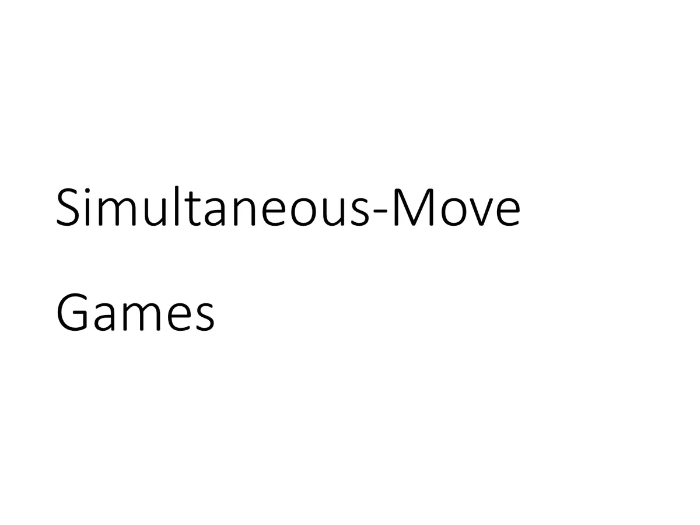
标题页：同时行动博弈（Simultaneous-Move Games）。这一讲共 128 页，是全课最长的一讲，值得先给一张地图。
一句话概括这门学问：我的最优取决于你怎么做，你的最优也取决于我怎么做。只要出现这种相互依赖，就轮到博弈论上场。
幻灯片原文 / 板书
Simultaneous-Move Games
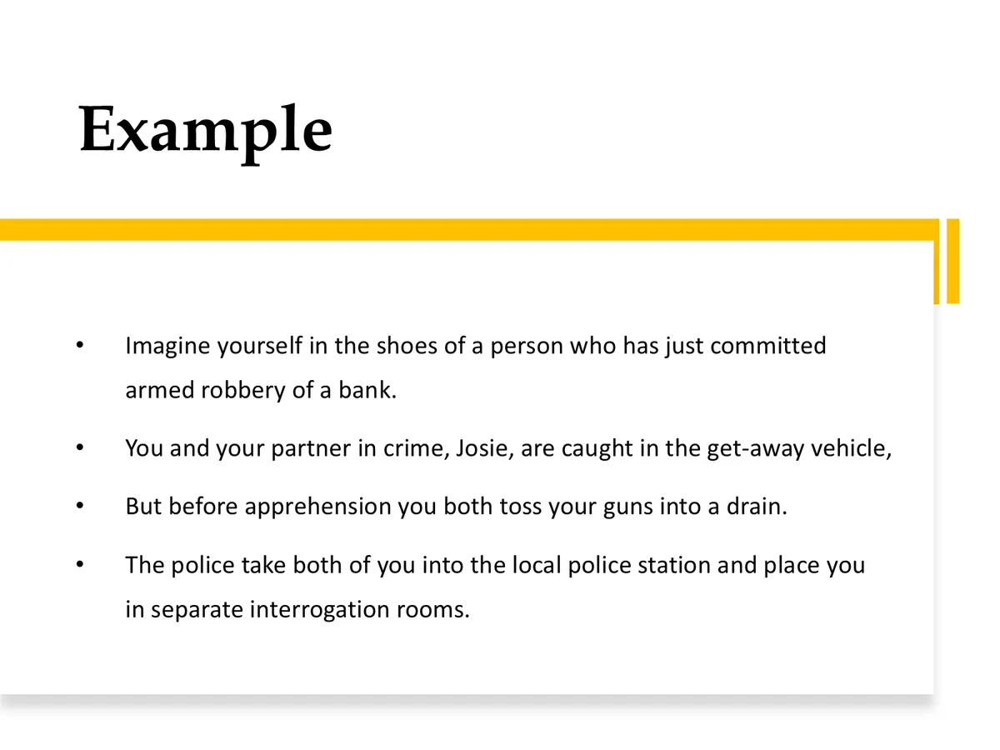
用一个犯罪故事开场。
你刚持枪抢了银行，和同伙 Josie 在接应车上被抓。被捕之前，两人把枪扔进了下水道——所以警察手上没有物证。于是他们把你们分开，关进两间审讯室。
注意剧本里最关键的三个字：分开审。如果能串供，这个故事在第一页就结束了——只要两人咬死不说，抢劫罪最多 2 年。分开，才让「各说各话」变成一门学问。
老师补充：这是囚徒困境的标准包装，后面一直用 she 指代 Josie。
幻灯片原文 / 板书
Example --- Imagine yourself in the shoes of a person who has just committed armed robbery of a bank. You and your partner in crime, Josie, are caught in the get-away vehicle, But before apprehension you both toss your guns into a drain. The police take both of you into the local police station and place you in separate interrogation rooms.
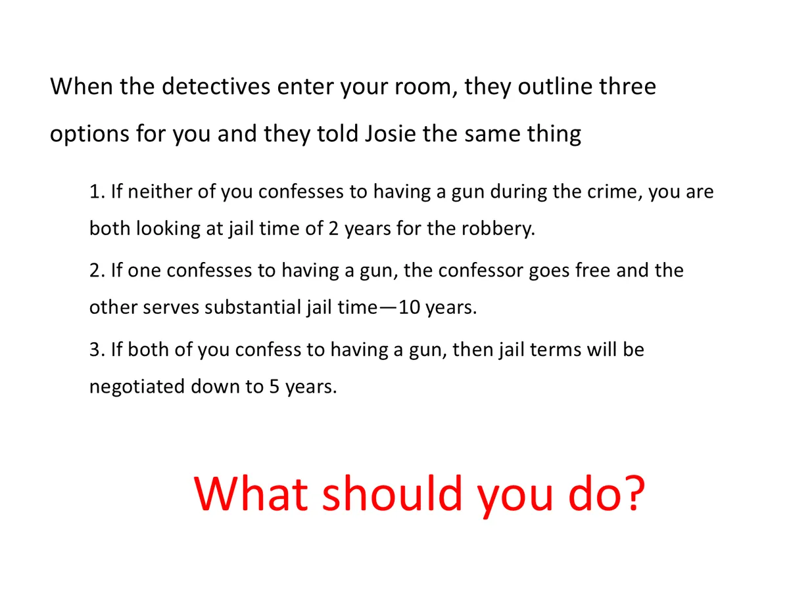
两位警探对你说的话，和对 Josie 说的话完全一样，一共三个选项：
- 两人都不认（hold out）：持枪这一条不成立，按抢劫判，各 2 年。
- 只有一人认罪：认的人当场释放，另一人重判 10 年。
- 两人都认：检察官愿意协商，各 5 年。
问题：你该怎么办？
先注意一件事——这三个句子其实已经把你的全部收益写完了。剩下的唯一未知，是 Josie 会选哪个。
幻灯片原文 / 板书
1. If neither of you confesses to having a gun during the crime, you are both looking at jail time of 2 years for the robbery. 2. If one confesses to having a gun, the confessor goes free and the other serves substantial jail time—10 years. 3. If both of you confess to having a gun, then jail terms will be negotiated down to 5 years. What should you do? --- When the detectives enter your room, they outline three options for you and they told Josie the same thing
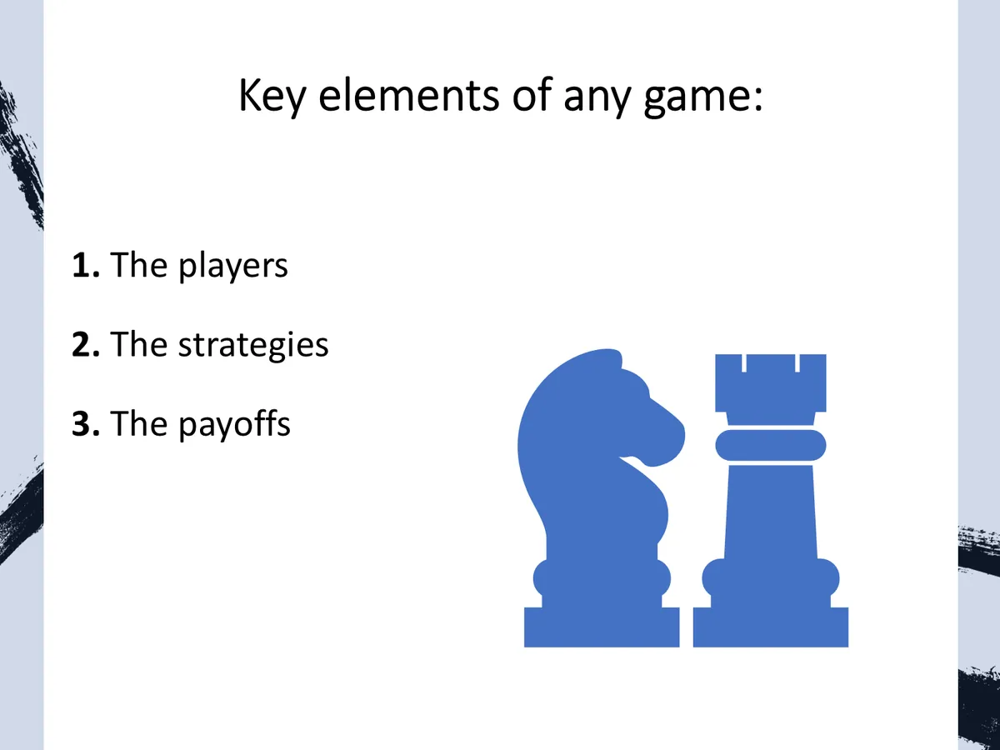
任何博弈都只有三个要素，缺一不可：
- 参与者（players）：谁在下这盘棋；
- 策略（strategies）：每个人可以做什么；
- 收益（payoffs）：每一种组合下，每个人各得到什么。
建模时漏掉一个策略，结论可能整个翻转；收益写错方向（比如把坐牢年数当成正效用），则会得出「大家都想多坐几年」的荒谬结论。
后面每一个案例，我们都按这三行来拆。
幻灯片原文 / 板书
Key elements of any game: --- 1. The players 2. The strategies 3. The payoffs
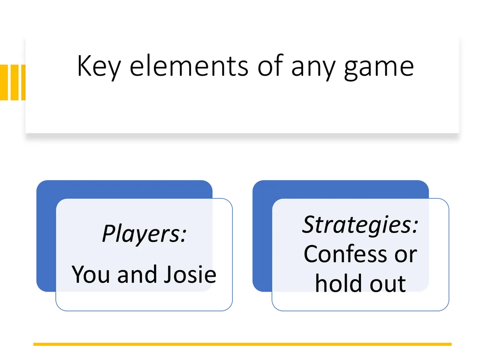
把三要素落到本案：
- Players：You and Josie，两个人。
- Strategies：Confess（认罪）或 Hold Out（不认）。
- Payoffs：下一页那张 2×2 的表。
两人各两个策略，一共 2×2 = 4 种组合。整讲的分析都发生在这四个格子里——这就是「同时博弈」的全部舞台，小得可以画在一张幻灯片上，却足够撑起半个经济学。
幻灯片原文 / 板书
Key elements of any game
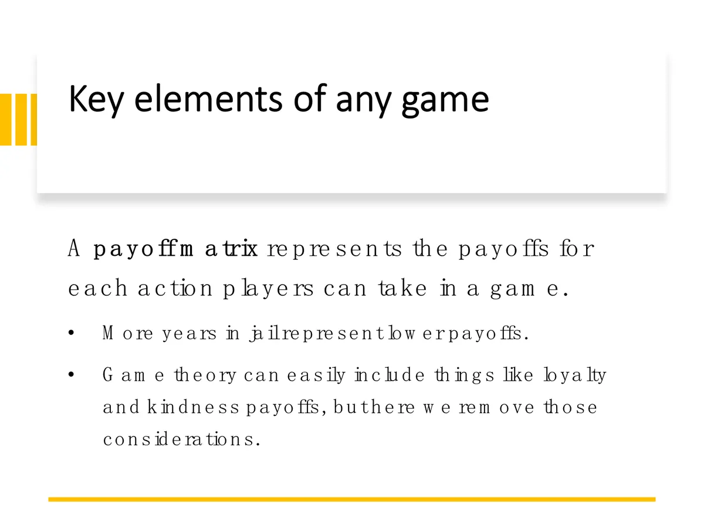
收益矩阵（payoff matrix）的定义：把每个参与者在各种行动组合下的收益排成一张表。
- 本例里「坐牢年数越多，收益越低」，所以数字是负向的：0 年最好，10 年最差。
- 博弈论当然可以装进忠诚、义气、愧疚这类收益，但这里故意剔除，只留纯粹的自利。
- 读法：行玩家选行、列玩家选列，格子里的两个数字依次是（行玩家收益, 列玩家收益）。
一句话：矩阵是博弈的「会计报表」，先把账记清楚，再谈策略。
幻灯片原文 / 板书
Key elements of any game --- A payoff matrix represents the payoffs for each action players can take in a game. More years in jail represent lower payoffs. Game theory can easily include things like loyalty and kindness payoffs, but here we remove those considerations.
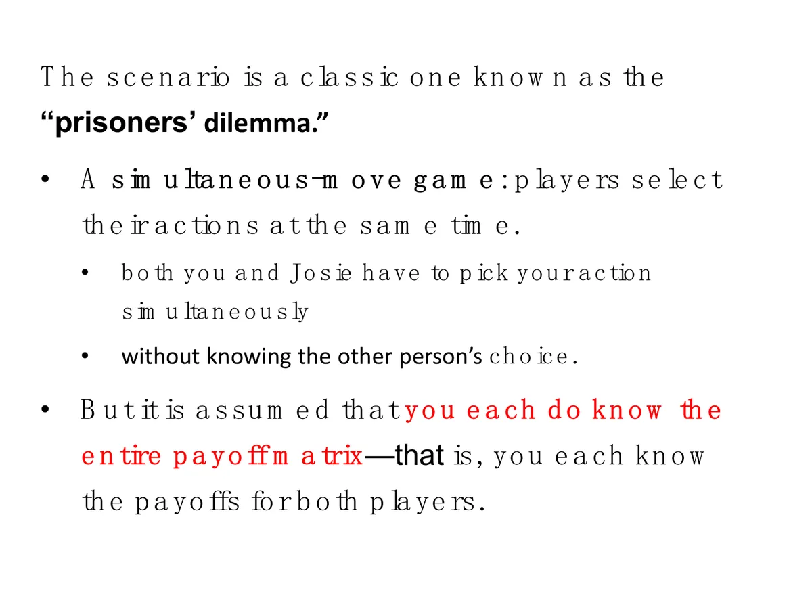
这个情形有个名字：囚徒困境（prisoners' dilemma）。
它同时是一个同时行动博弈（simultaneous-move game）：两人在同一时刻选，谁也不知道对方选了什么。
但有一个很强的假设：双方都知道整张收益矩阵——你知道 Josie 每种选择下的结果，她也知道你的。
老师补充：不知道对方收益的博弈叫「不完全信息」，那是另一门课的内容；本讲所有博弈都是「大家都看得见账本」。
幻灯片原文 / 板书
The scenario is a classic one known as the “prisoners’ dilemma.” A simultaneous-move game: players select their actions at the same time. both you and Josie have to pick your action simultaneously without knowing the other person’s choice. But it is assumed that you each do know the entire payoff matrix—that is, you each know the payoffs for both players.
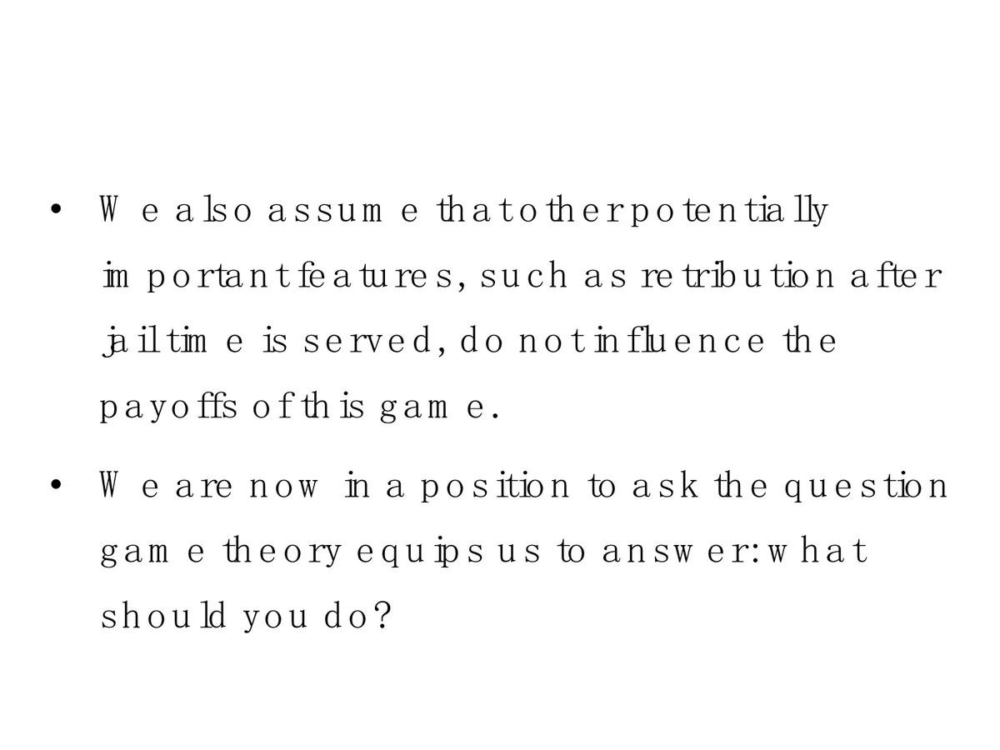
再补一条假设：出狱后的报复、江湖上的名声，这些因素不影响本博弈的收益。
这不是说现实中不存在，而是我们先把它们关掉，看清最纯粹的激励结构。等工具练熟了，P69 再把「声誉」放回模型里。
现在可以问那个博弈论专门用来回答的问题：你该怎么办？
注意提问方式——不是「你会怎么做」，而是「应该怎么做」。博弈论给的是理性建议，不是心理描述。
幻灯片原文 / 板书
We also assume that other potentially important features, such as retribution after jail time is served, do not influence the payoffs of this game. We are now in a position to ask the question game theory equips us to answer: what should you do?
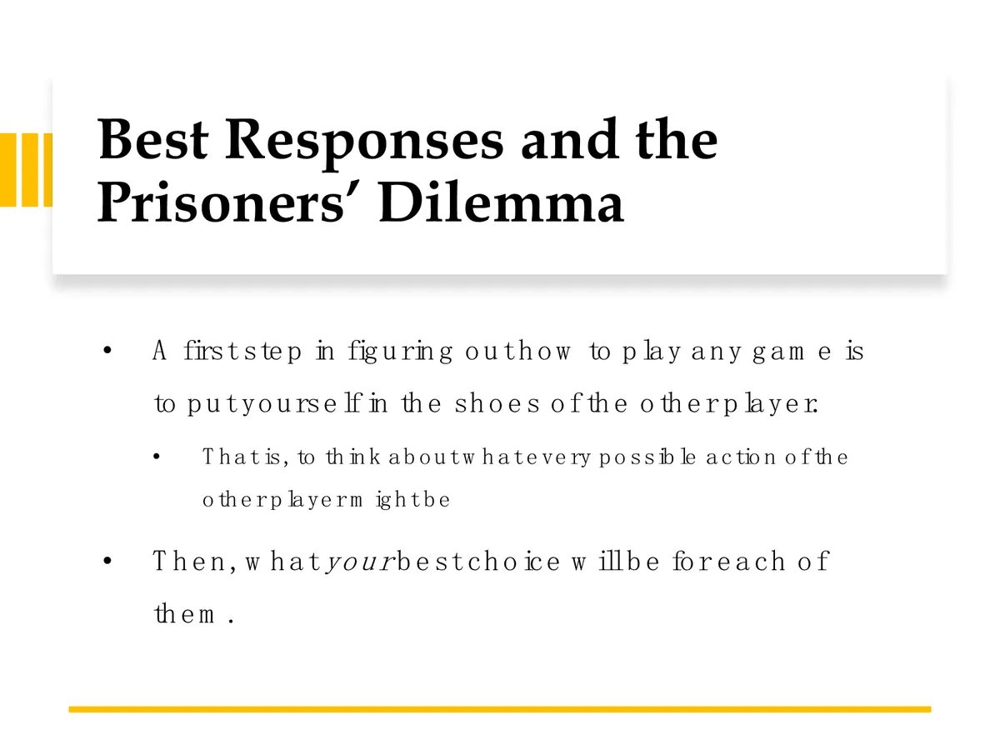
回答的方法只有一步：站在对方的位置上想。
- 先列出对方所有可能的行动；
- 对每一个行动，问「这种情况下我最好的选择是什么」。
这个「针对对方某个具体策略的最优选择」，叫最优反应（best response）。
注意它是条件句而不是结论：先说「如果她……」，才说「那么我……」。丢了前半句，后半句就没有意义。下一页我们就一条一条地算。
幻灯片原文 / 板书
Best Responses and the Prisoners’ Dilemma --- A first step in figuring out how to play any game is to put yourself in the shoes of the other player. That is, to think about what every possible action of the other player might be Then, what your best choice will be for each of them.
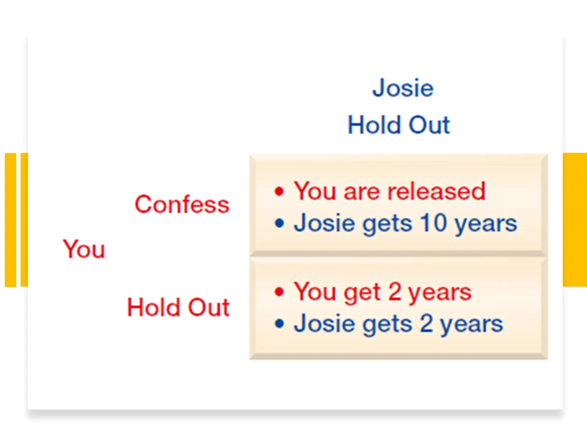
先假设 Josie 选 Hold Out（不认），只看矩阵的这一列：
| 你 \ Josie | Hold Out |
|---|---|
| Confess | 你被释放，Josie 10 年 |
| Hold Out | 各 2 年 |
你面对的两个数字：0 年 和 2 年。0 < 2，所以认罪更优。
这就是「在 Josie 不认的前提下，你的最优反应是认罪」。
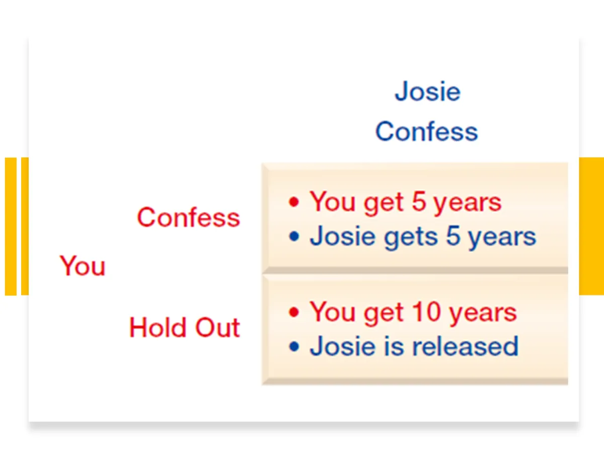
再假设 Josie 选 Confess，只看另一列：
| 你 \ Josie | Confess |
|---|---|
| Confess | 各 5 年 |
| Hold Out | 你 10 年，Josie 释放 |
你的两个数字变成 5 年 和 10 年，认罪仍然更优。
两列指向同一个答案——这件事比答案本身更重要。它意味着你不需要预测 Josie，也不需要相信她理性，照样知道该怎么做。下一页给它命名。
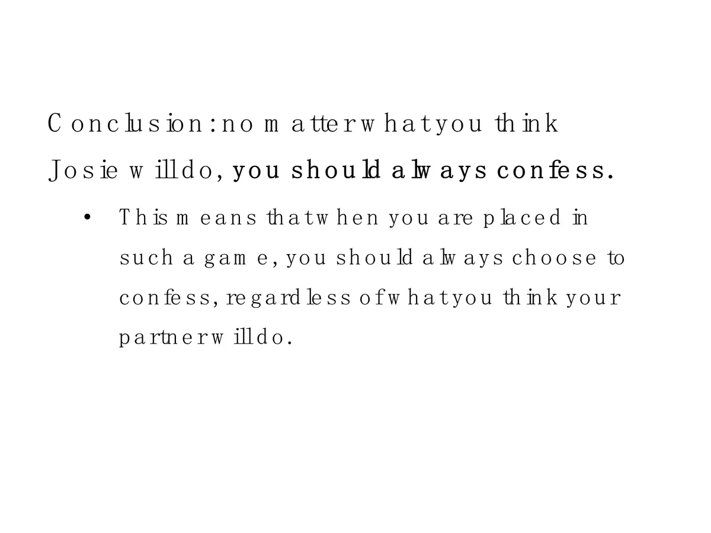
结论：
无论你认为 Josie 会怎么做，你都应该认罪。
- 她不认 → 你认罪可以当场走出去；
- 她认了 → 你认罪只判 5 年，硬撑要 10 年。
在一个充满不确定的博弈里，居然存在一个「不用猜」的选择——这是极强的性质。经济学给它起了个名字，叫占优。
注意这个结论的强度：它不要求你了解 Josie 的性格，不要求她理性，也不要求你猜对——只要她有自己的选择，认罪就不亏。信息要求这么低的预测，在经济学里非常少见，所以占优策略才显得珍贵。
幻灯片原文 / 板书
Conclusion: no matter what you think Josie will do, you should always confess. This means that when you are placed in such a game, you should always choose to confess, regardless of what you think your partner will do.
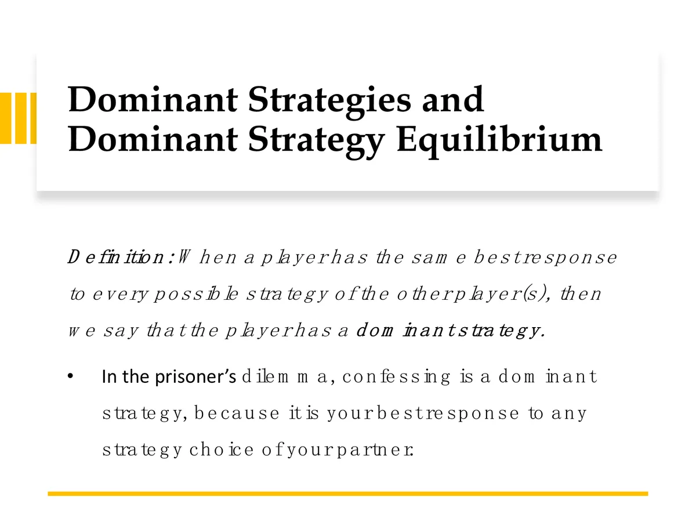
定义：如果某个策略是玩家对其他玩家每一个可能策略的最优反应，就说这个玩家有占优策略（dominant strategy）。
在囚徒困境里，认罪就是占优策略：它对「对方认」和「对方不认」两种情形都最优。
两个常见误解要拆掉：
- 占优不是「我的收益比对方高」，而是「我自己的这个选择，在每种情形下都比我的其他选择好」；
- 占优不是「收益最大」，是「无论如何都不后悔」。
幻灯片原文 / 板书
Dominant Strategies and Dominant Strategy Equilibrium --- Definition: When a player has the same best response to every possible strategy of the other player(s), then we say that the player has a dominant strategy. In the prisoner’s dilemma, confessing is a dominant strategy, because it is your best response to any strategy choice of your partner.
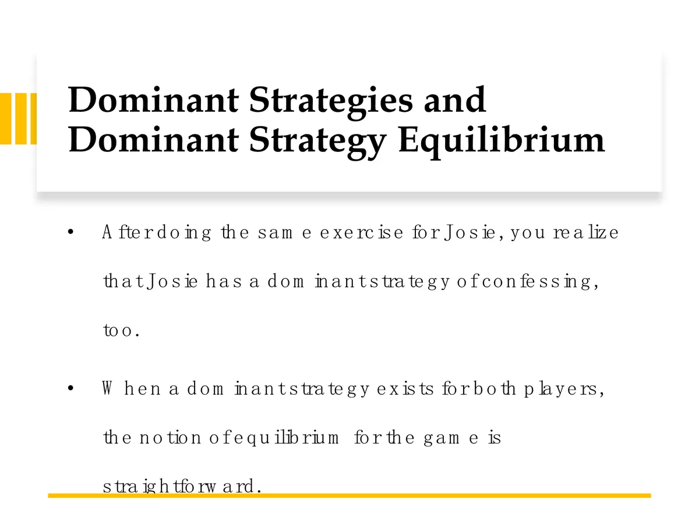
对 Josie 做完全相同的练习，你会发现她的占优策略也是认罪——矩阵是对称的，她的每一列/行都对应你的每一行/列。
当双方都有占优策略时，均衡概念就变得极其简单：不需要猜、不需要协调、不需要沟通，各自选自己的占优策略就完事了。
下一页给这个组合一个正式名字，然后我们看它为什么是个「困境」。
幻灯片原文 / 板书
Dominant Strategies and Dominant Strategy Equilibrium --- After doing the same exercise for Josie, you realize that Josie has a dominant strategy of confessing, too. When a dominant strategy exists for both players, the notion of equilibrium for the game is straightforward.
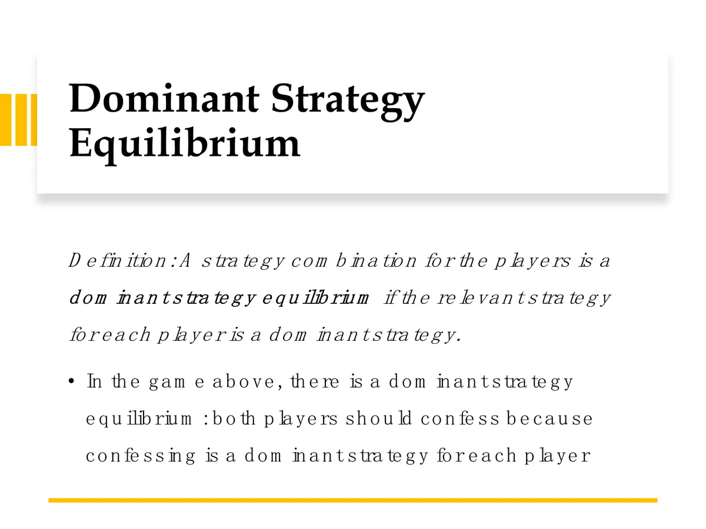
定义：如果每个玩家选的都是自己的占优策略，这个策略组合就叫占优策略均衡（dominant strategy equilibrium）。
本例的占优策略均衡是（Confess, Confess）：两人各判 5 年。
老师补充：这是所有均衡概念里最「硬」的一个——它甚至不要求你相信对方是理性的，因为不管你信不信，你的答案都一样。也正因如此，它是比较少见的奢侈品。
幻灯片原文 / 板书
Dominant Strategy Equilibrium --- Definition: A strategy combination for the players is a dominant strategy equilibrium if the relevant strategy for each player is a dominant strategy. In the game above, there is a dominant strategy equilibrium: both players should confess because confessing is a dominant strategy for each player
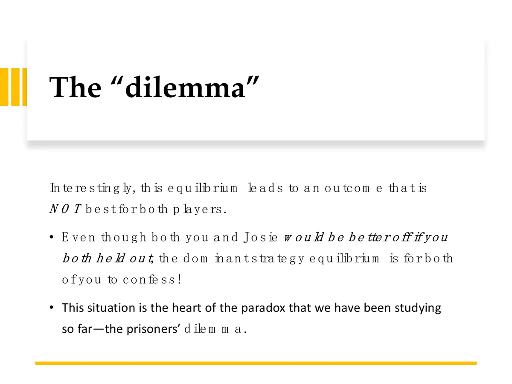
困境在哪里？
这个均衡的结果，对双方都不是最好的。两人都 Hold Out 各判 2 年，都认罪各判 5 年；2 < 5，双方都宁愿（Hold Out, Hold Out）。
可占优策略均衡偏偏把两人推到（Confess, Confess）。
这就是 dilemma 的确切含义：每个人都在做对自己最有利的事，合起来却得到对所有人都不利的结果。个体理性，集体不理性——这不是愚蠢，是结构。
幻灯片原文 / 板书
The “dilemma” --- Interestingly, this equilibrium leads to an outcome that is NOT best for both players. Even though both you and Josie would be better off if you both held out, the dominant strategy equilibrium is for both of you to confess! This situation is the heart of the paradox that we have been studying so far—the prisoners’ dilemma.
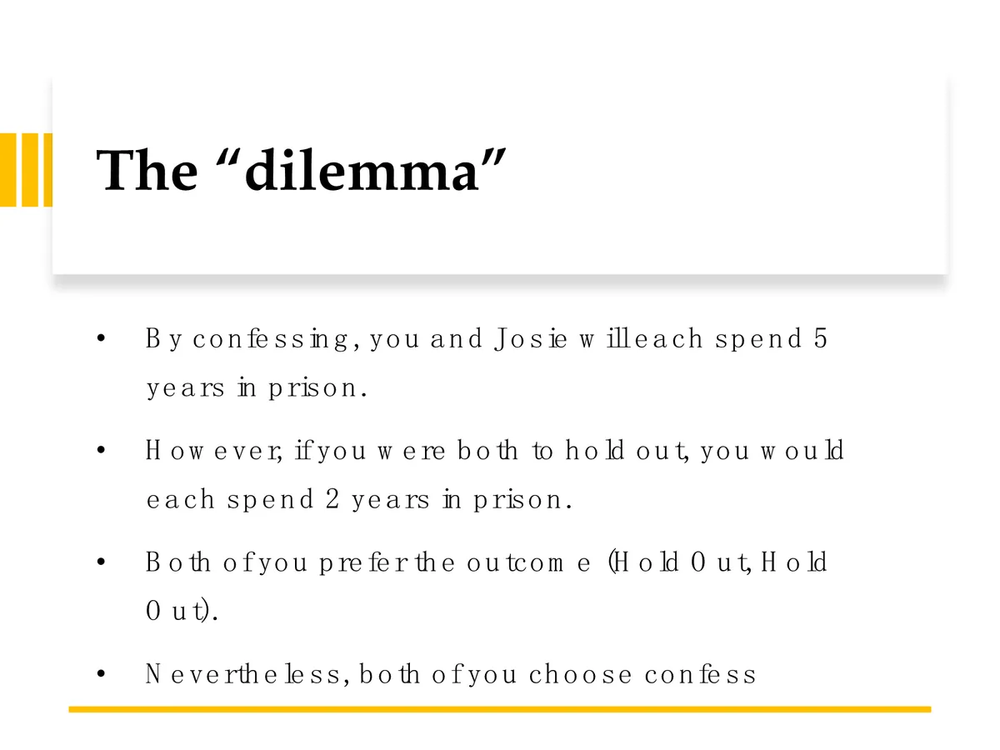
把两组数字并排放：
- 均衡（Confess, Confess）：各 5 年；
- 合作（Hold Out, Hold Out）：各 2 年。
两人都偏好后者，却都选了前者。原因不是短视，而是每个人单独偏离都对自己有利：给定对方不认，你认罪就能从 2 年降到 0 年。
结论一句话：没有可执行的协议时，合作撑不住。这也解释了为什么现实中的卡特尔、限价协议、军控条约，都必须靠外部 enforcement。
幻灯片原文 / 板书
The “dilemma” --- By confessing, you and Josie will each spend 5 years in prison. However, if you were both to hold out, you would each spend 2 years in prison. Both of you prefer the outcome (Hold Out, Hold Out). Nevertheless, both of you choose confess
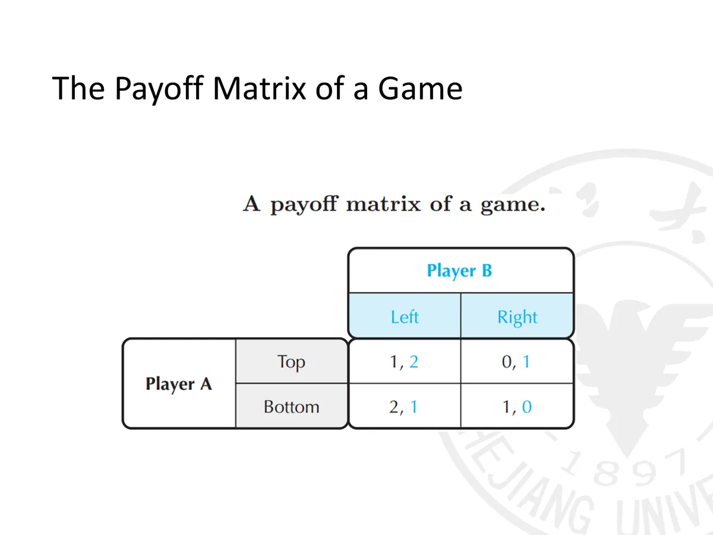
这一页是一张通用矩阵，教你怎么读表：
| A \ B | Left | Right |
|---|---|---|
| Top | 1, 2 | 0, 1 |
| Bottom | 2, 1 | 1, 0 |
固定一列，比较行玩家自己的两个数字；再固定一行，比较列玩家的两个数字。
在这张表里，B 的 Left 是占优策略（2 > 1、1 > 0），A 对此的最优反应是 Bottom（2 > 1），所以均衡是（Bottom, Left）。
老师补充：读表的顺序永远是「先看别人，再看自己」，别一上来就盯着自己的收益发呆。
幻灯片原文 / 板书
The Payoff Matrix of a Game
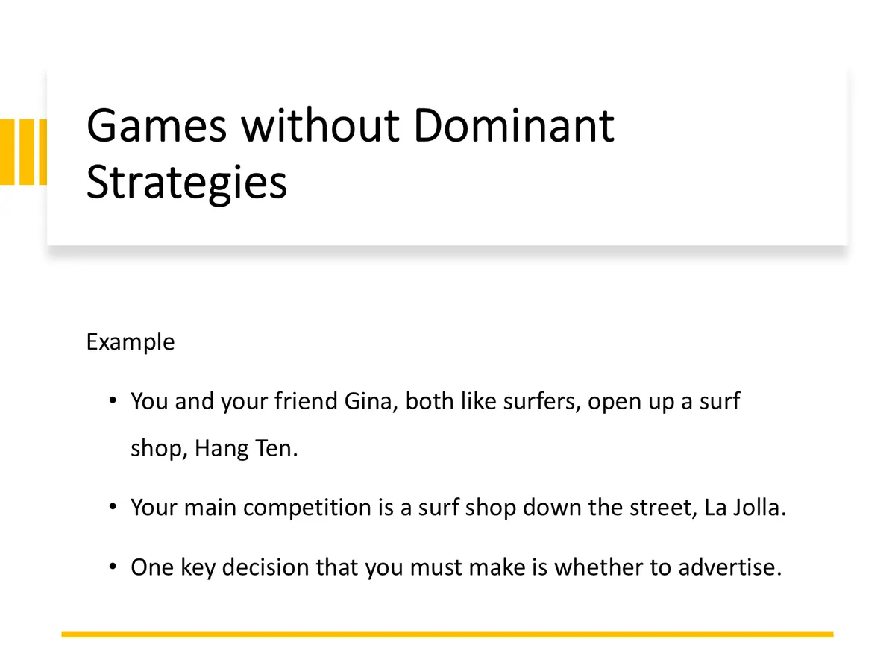
换一个没有占优策略的例子。
你和朋友 Gina 都是冲浪爱好者，合伙在街上开了家冲浪店 Hang Ten。主要竞争对手是街那头的 La Jolla。
你们要决定的一件事：要不要做广告。
注意这个结构：你的收益取决于对方做不做广告。这正是纳什均衡要处理的情形——从此开始，「猜对方」重新变得重要。
幻灯片原文 / 板书
Games without Dominant Strategies --- Example You and your friend Gina, both like surfers, open up a surf shop, Hang Ten. Your main competition is a surf shop down the street, La Jolla. One key decision that you must make is whether to advertise.
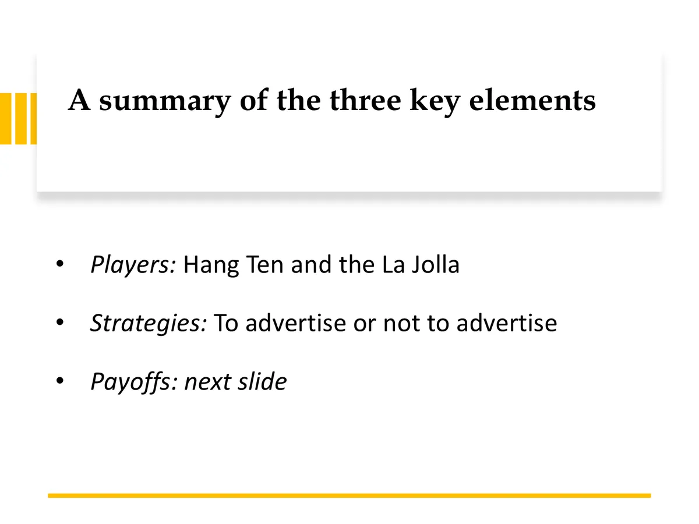
三要素，先搭框架再看数字：
- Players：Hang Ten 与 La Jolla；
- Strategies：Advertise（做广告）/ Don't Advertise（不做）；
- Payoffs：下一页那张表。
老师补充：做题时把这三行写出来，比直接在矩阵里找数字可靠得多，尤其是当矩阵有三四个玩家的时候。
幻灯片原文 / 板书
A summary of the three key elements --- Players: Hang Ten and the La Jolla Strategies: To advertise or not to advertise Payoffs: next slide
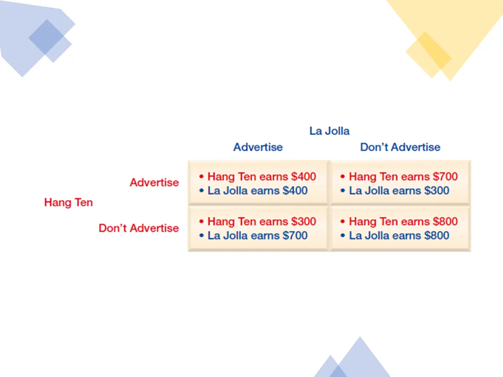
收益矩阵（单位：美元）：
| Hang Ten \ La Jolla | Advertise | Don't |
|---|---|---|
| Advertise | 400, 400 | 700, 300 |
| Don't | 300, 700 | 800, 800 |
读法：左上「都做广告」各赚 400；右下「都不做」各赚 800；右上你 700、对手 300，左下反过来。
第一印象很重要：都不做广告对双方都最好（800 > 400）。但能不能停在那里？先别下结论，下一页开始算。
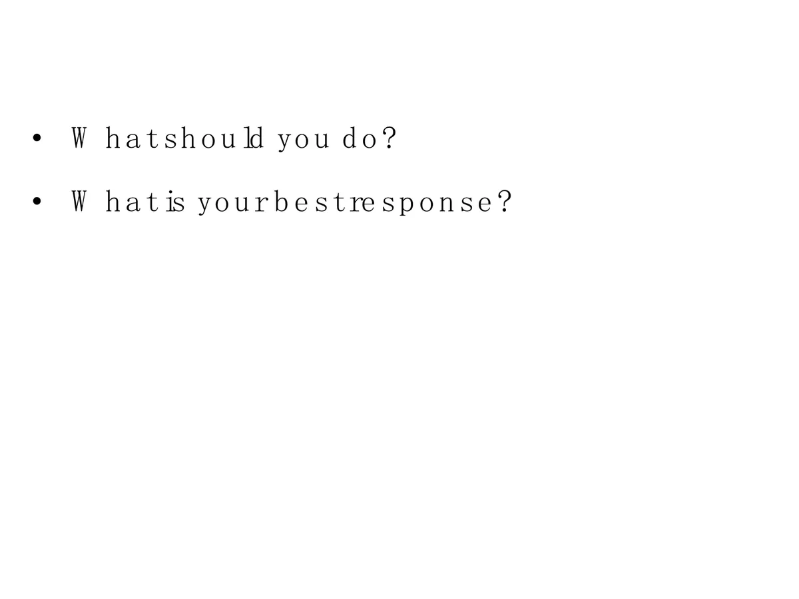
问题：你该怎么做？你的最优反应是什么？
方法还是那一步：先假设对方的选择，再看自己那两个数字。
这一页刻意不给答案，因为答案会随对方的选择而变——这恰恰是它跟囚徒困境的区别。在囚徒困境里，答案不依赖对方；在这里，答案依赖。
顺便提醒一个常见错误：很多人一看到矩阵就去找「总数最大」的那一格（这里是 800 + 800），然后宣布那是答案。总数最大不是均衡——均衡问的是「谁还想动」，不是「谁的数字加起来大」。
幻灯片原文 / 板书
What should you do? What is your best response?
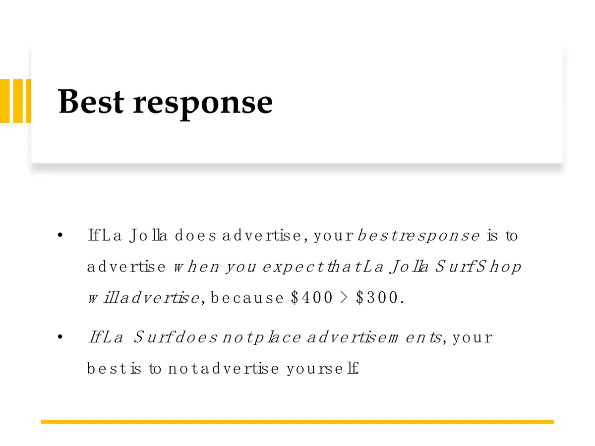
分两种情形算：
- La Jolla 做广告 → 你做广告得 400，不做只得 300 → 做广告（400 > 300）。
- La Jolla 不做广告 → 你做广告得 700，不做得 800 → 不做广告（800 > 700）。
两列给出不同答案。也就是说，你的最优反应是对方策略的函数，而不是一个固定动作。
幻灯片原文 / 板书
Best response --- If La Jolla does advertise, your best response is to advertise when you expect that La Jolla Surf Shop will advertise, because $400 > $300. If La Surf does not place advertisements, your best is to not advertise yourself.
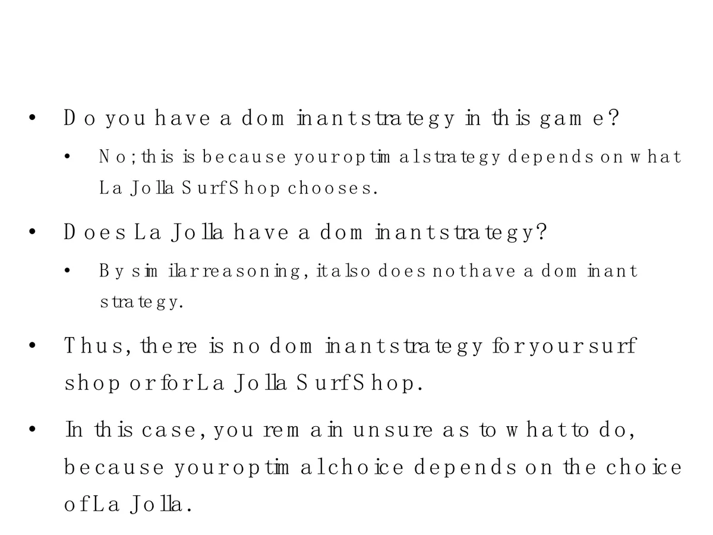
于是你没有占优策略。
同理，La Jolla 也没有：
- 你做广告时，它做广告得 400 > 不做 300；
- 你不做时，它不做得 800 > 做 700。
结论：双方都没有占优策略。你没法用「不管对方怎样我都这么干」来决策，必须去猜对方——而对方也在猜你。这就需要一个新概念。
幻灯片原文 / 板书
Do you have a dominant strategy in this game? No; this is because your optimal strategy depends on what La Jolla Surf Shop chooses. Does La Jolla have a dominant strategy? By similar reasoning, it also does not have a dominant strategy. Thus, there is no dominant strategy for your surf shop or for La Jolla Surf Shop. In this case, you remain unsure as to what to do, because your optimal choice depends on the choice of La Jolla.
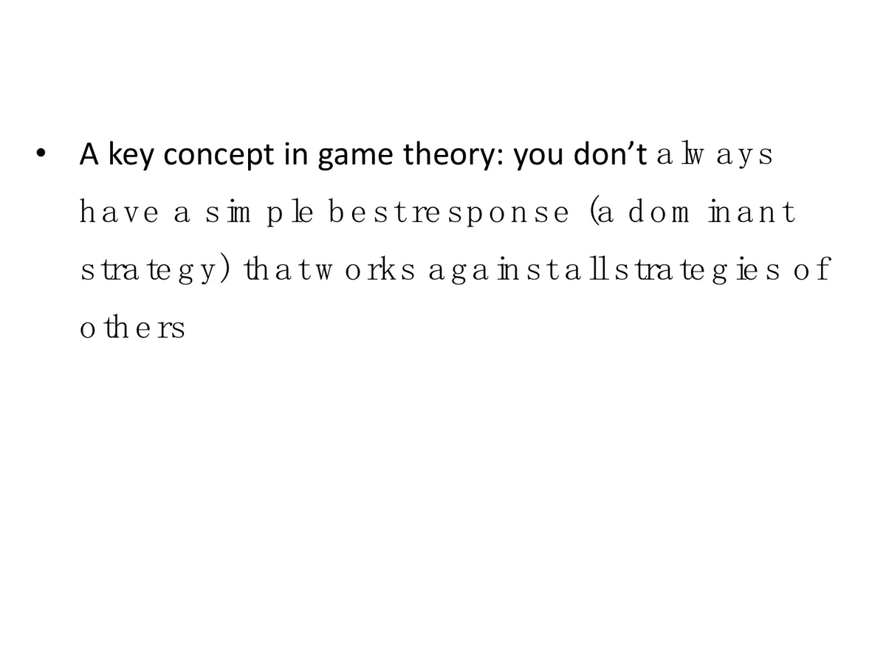
这页给一句关键提醒：
博弈论里，你并不是总有一个「放之四海而皆准」的最优反应。
占优策略是奢侈品，多数真实博弈都没有。但没有占优策略不等于没法分析，只是要换工具——从「无条件最优」换成「互为条件最优」。
两者的记忆法：占优策略问「不管你怎么做，我都这么做」；纳什均衡问「给定你这么做，我这么做，而你也恰好一样」。前者无条件，后者相互印证。
下一页开始换。
幻灯片原文 / 板书
A key concept in game theory: you don’t always have a simple best response (a dominant strategy) that works against all strategies of others
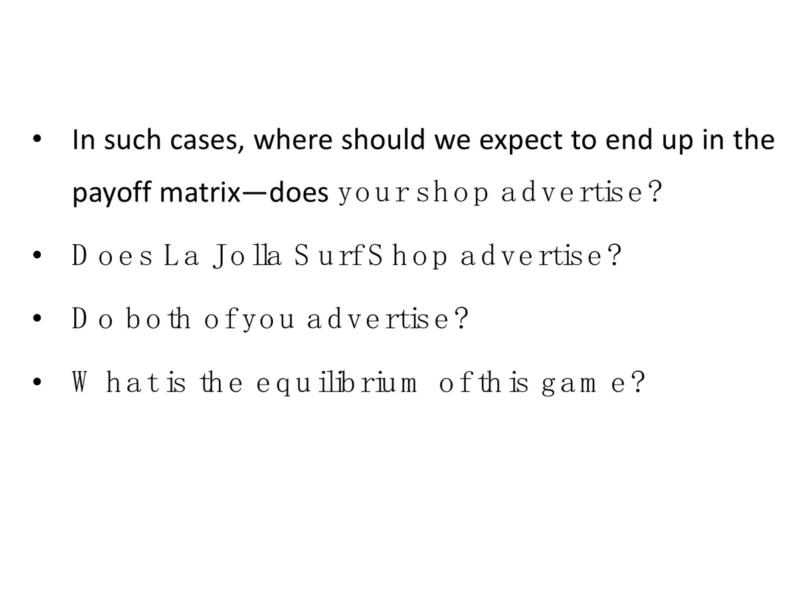
既然不能靠占优策略，我们换个问法：这个矩阵里，我们会停在哪一格？
- 你做广告吗？La Jolla 做吗？
- 会不会两家都做？
- 这个博弈的均衡是什么？
四个问句其实问的是同一件事：哪一格具有「谁都不想单独离开」的性质。找到它，就找到了预测。
幻灯片原文 / 板书
In such cases, where should we expect to end up in the payoff matrix—does your shop advertise? Does La Jolla Surf Shop advertise? Do both of you advertise? What is the equilibrium of this game?
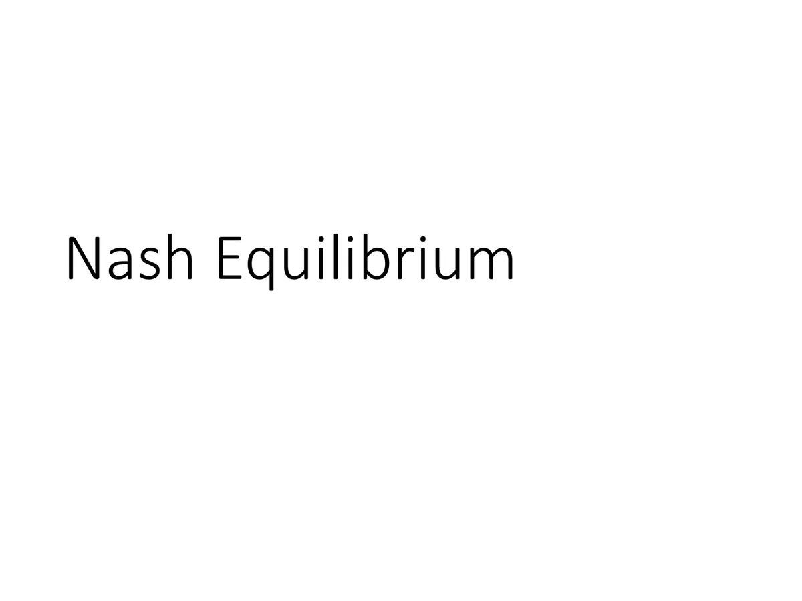
标题页：纳什均衡（Nash Equilibrium）。
以 John Nash 命名——电影《美丽心灵》的原型，1994 年诺贝尔经济学奖得主，博弈论最核心的概念提出者。
这是本讲的主干，也是整个现代经济学的通用语言：从寡头定价、拍卖设计，到制度比较、演化生物学，用的都是这个概念。
幻灯片原文 / 板书
Nash Equilibrium
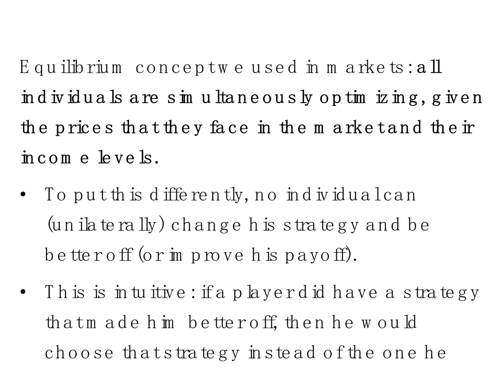
先把它跟已经学过的市场均衡接上。
换个说法：没有任何人能够单方面改变自己的策略而变得更好。
这句话很好理解——如果存在这样一个更优策略，他早就选了；他没选，说明当前这个选择已经是最优。所以「无人愿意单方面偏离」是一个自洽的状态。
幻灯片原文 / 板书
Equilibrium concept we used in markets: all individuals are simultaneously optimizing, given the prices that they face in the market and their income levels. To put this differently, no individual can (unilaterally) change his strategy and be better off (or improve his payoff). This is intuitive: if a player did have a strategy that made him better off, then he would choose that strategy instead of the one he chose.
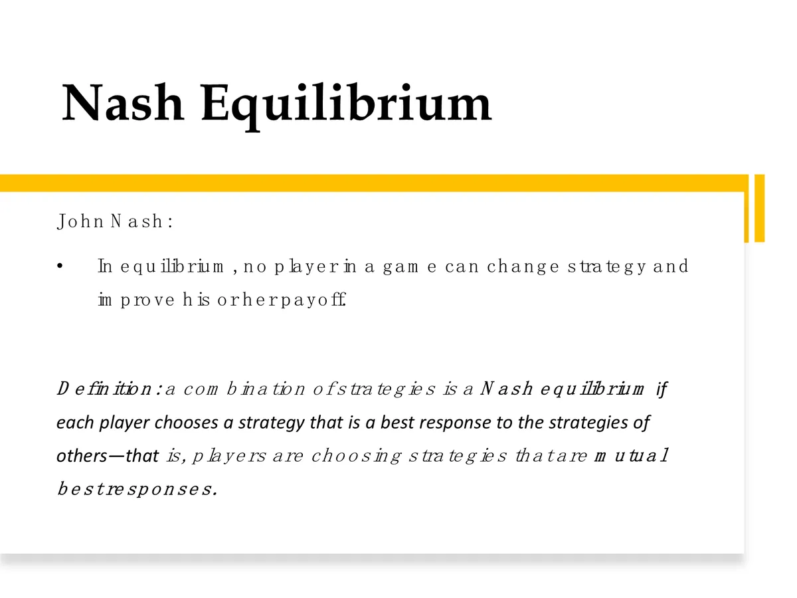
Nash 的定义，请背下来：
一个策略组合是纳什均衡，如果每个人的策略都是对其他人策略的最优反应——即双方互为最优反应（mutual best responses）。
注意「互为」两个字：不是「我最优」就行，要双方同时都最优。任何一方有更好的选择，这个组合就不算均衡。
幻灯片原文 / 板书
Nash Equilibrium --- John Nash: In equilibrium, no player in a game can change strategy and improve his or her payoff. Definition: a combination of strategies is a Nash equilibrium if each player chooses a strategy that is a best response to the strategies of others—that is, players are choosing strategies that are mutual best responses.
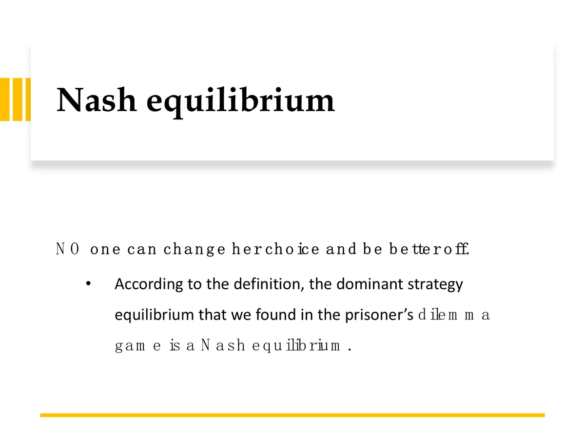
换句话再说一遍：没有人能改变自己的选择而变得更好。
推论：囚徒困境里的占优策略均衡一定是纳什均衡。因为占优策略对所有情形都最优，当然包括对方实际选的那一个。
反过来不成立：纳什均衡不要求占优。纳什均衡是更宽的一只筐，占优策略均衡只是筐里最硬的那块石头。
幻灯片原文 / 板书
Nash equilibrium --- NO one can change her choice and be better off. According to the definition, the dominant strategy equilibrium that we found in the prisoner’s dilemma game is a Nash equilibrium.
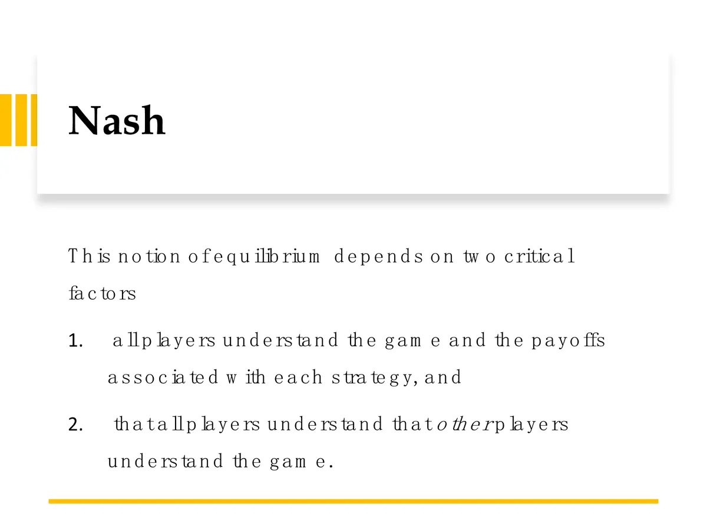
这个均衡概念依赖两个很强的假设：
- 所有玩家都理解这个博弈，以及每种策略对应的收益；
- 所有玩家都知道别人也理解这个博弈。
第二条常被忽略，但它才是要害：它要求「我知道你知道我知道……」这条无穷链条成立。链条一断，纳什均衡就不再是对行为的可靠预测。
幻灯片原文 / 板书
Nash --- This notion of equilibrium depends on two critical factors all players understand the game and the payoffs associated with each strategy, and that all players understand that other players understand the game.
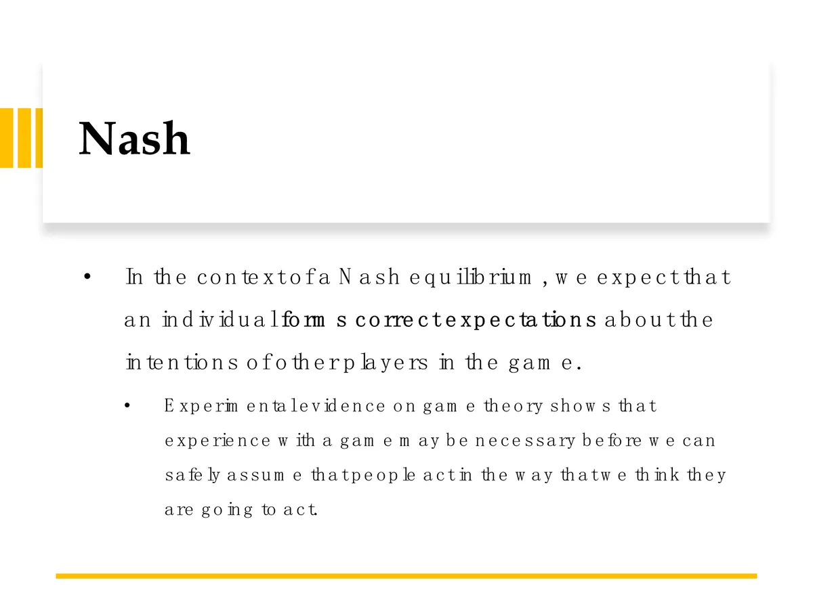
在纳什均衡里，我们预期每个人对别人的意图形成正确的预期。
但实验证据提醒我们：经验常常是必要的。第一次玩某个博弈的人，很少直接落在均衡上；玩过几轮、看过别人的反应之后，行为才逐渐收敛到理论预测。
老师补充：所以均衡是长期预测，不是「人一坐下就这么想」的描述。这个区别在考试里常被拿来出判断题。
幻灯片原文 / 板书
Nash --- In the context of a Nash equilibrium, we expect that an individual forms correct expectations about the intentions of other players in the game. Experimental evidence on game theory shows that experience with a game may be necessary before we can safely assume that people act in the way that we think they are going to act.
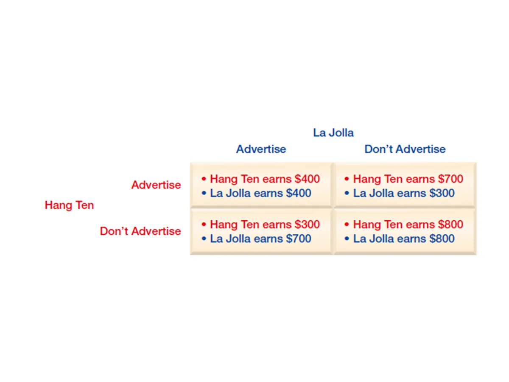
回到冲浪店的矩阵（图）。用箭头法找均衡：在每一格里，看双方各自想不想单方面改。
- （Advertise, Advertise）：你想改吗？不想（改成就 300 < 400）；对手也不想改。→ 均衡。
- （Don't, Don't）：你想改吗？不想（改成 700 < 800）；对手也不想改。→ 均衡。
- 另外两格（一做一不做）：吃亏的那一方一定想改，所以不是均衡。
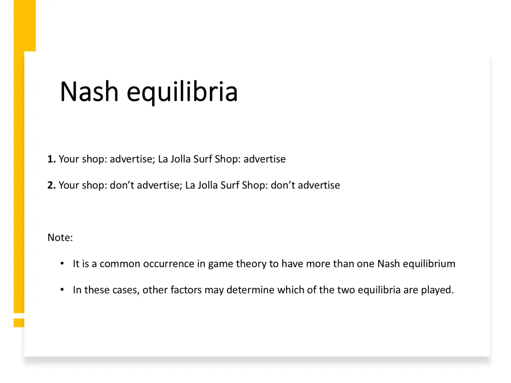
于是有两个纳什均衡：
- 都做广告：（400, 400）
- 都不做广告：（800, 800）
多重均衡是常态，不是例外。光靠矩阵本身，理论无法告诉你哪一个会发生，需要矩阵之外的信息——历史、惯例、沟通、监管。
老师补充：这也说明「协调」本身是有价值的经济活动，广告轰炸有时只是为了抢那个 400 的均衡位置。
幻灯片原文 / 板书
Nash equilibria --- 1. Your shop: advertise; La Jolla Surf Shop: advertise 2. Your shop: don’t advertise; La Jolla Surf Shop: don’t advertise Note: It is a common occurrence in game theory to have more than one Nash equilibrium In these cases, other factors may determine which of the two equilibria are played.
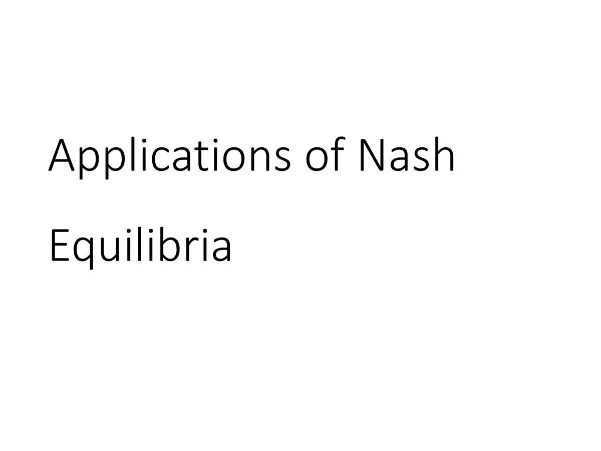
过渡页：纳什均衡的应用。
接下来两个场景：一个是公地悲剧（污染），双方都输；一个是零和博弈（点球），一方赢必有一方输。两种极端，正好把博弈论的应用面撑开。
注意看它们怎么共用同一套工具：三要素、最优反应、箭头法、均衡。
到这里工具箱其实已经齐了：三要素 → 收益矩阵 → 最优反应 → 占优策略（如果有）→ 纳什均衡（一定找得到）。接下来只是换场景，不再加新工具——这也是检验自己有没有真懂的办法：新案例进来，你能不能自己把矩阵写出来。
幻灯片原文 / 板书
Applications of Nash Equilibria
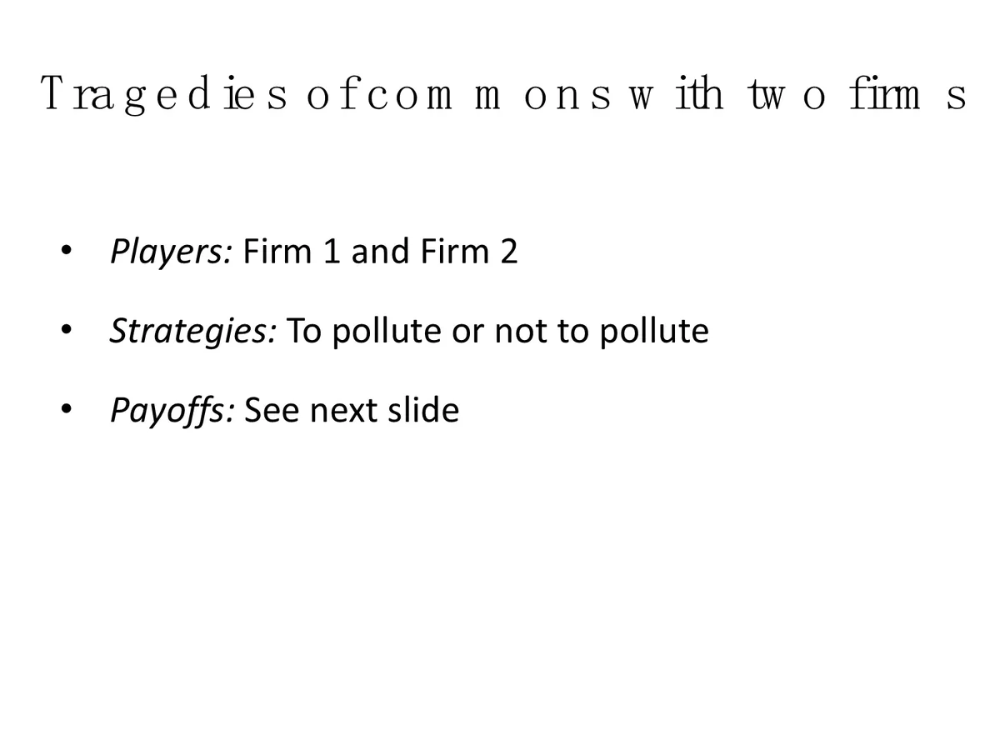
两家企业的污染博弈，三要素：
- Players：Firm 1 与 Firm 2；
- Strategies：Pollute（排污）/ Don't Pollute（治理）；
- Payoffs：下一页。
注意这里的收益是企业利润，污染造成的社会成本不进企业的账。这不是模型的疏忽，恰恰是问题的根源：成本落在别人头上时，决策就会系统性偏离社会最优。
幻灯片原文 / 板书
Tragedies of commons with two firms --- Players: Firm 1 and Firm 2 Strategies: To pollute or not to pollute Payoffs: See next slide
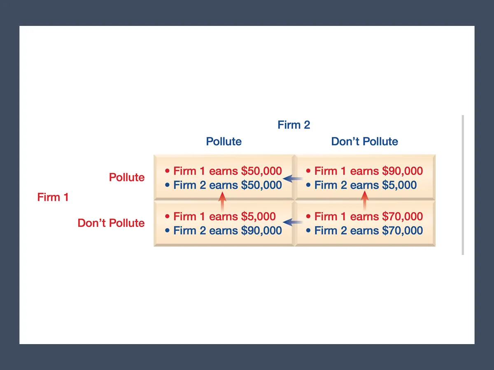
矩阵（单位：美元）：
| Firm 1 \ Firm 2 | Pollute | Don't Pollute |
|---|---|---|
| Pollute | 50,000, 50,000 | 90,000, 5,000 |
| Don't Pollute | 5,000, 90,000 | 70,000, 70,000 |
读法：都治理各赚 70,000（四格中双方总和最高）；一家治理一家排污，排污者赚 90,000、治理者只赚 5,000。
检查占优：无论 Firm 2 怎么选，排污都多赚 20,000（50,000 > 5,000；90,000 > 70,000）。所以排污是双方的占优策略。
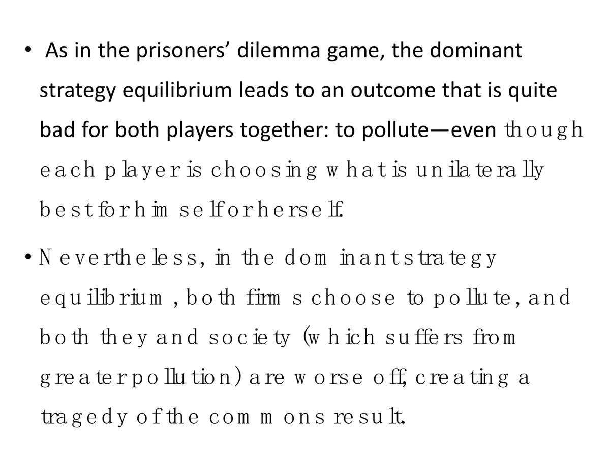
于是占优策略均衡是双方都排污，各赚 50,000。
而双方都治理能各赚 70,000。和囚徒困境一模一样：个体理性导致集体更差。
这里还多出一个受害者——社会。多出来的污染没有人赔，也没有人有权阻止，这就是公地悲剧（tragedy of the commons）。
一句话：每个人的账本上都对，加起来的账本全错。
幻灯片原文 / 板书
As in the prisoners’ dilemma game, the dominant strategy equilibrium leads to an outcome that is quite bad for both players together: to pollute—even though each player is choosing what is unilaterally best for himself or herself. Nevertheless, in the dominant strategy equilibrium, both firms choose to pollute, and both they and society (which suffers from greater pollution) are worse off, creating a tragedy of the commons result.
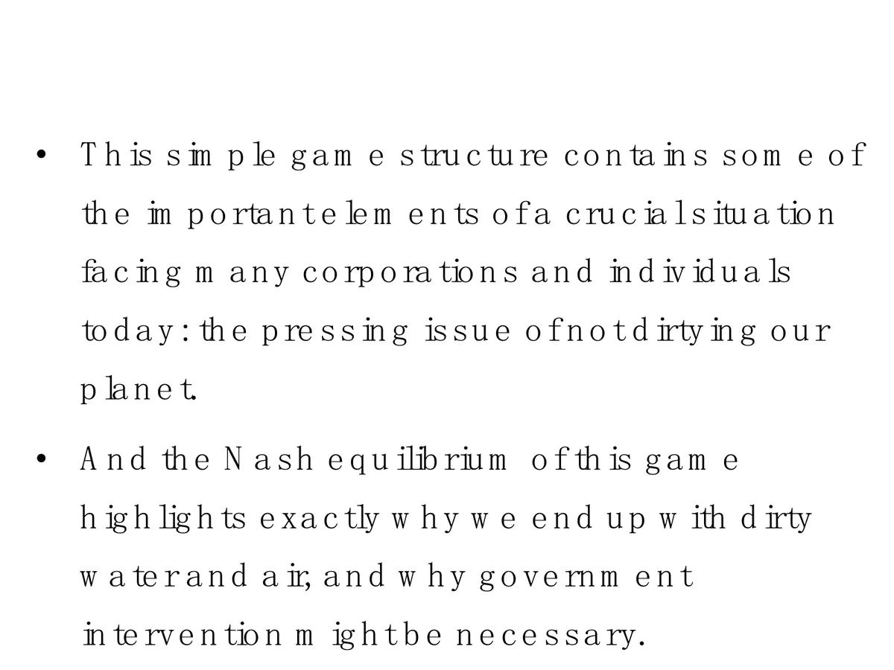
这页把模型接回现实。企业排污、乱扔垃圾、过度捕捞、碳排放，结构都是这张 2×2 表。
结论很直接：纳什均衡恰好解释了为什么水是脏的、空气是脏的——不是因为坏人当道，而是因为激励结构如此。
于是政府干预有了理论依据：征排污税、发配额、界定产权，本质都是改写收益矩阵，把均衡从（Pollute, Pollute）挪到（Don't, Don't）。
幻灯片原文 / 板书
This simple game structure contains some of the important elements of a crucial situation facing many corporations and individuals today: the pressing issue of not dirtying our planet. And the Nash equilibrium of this game highlights exactly why we end up with dirty water and air, and why government intervention might be necessary.
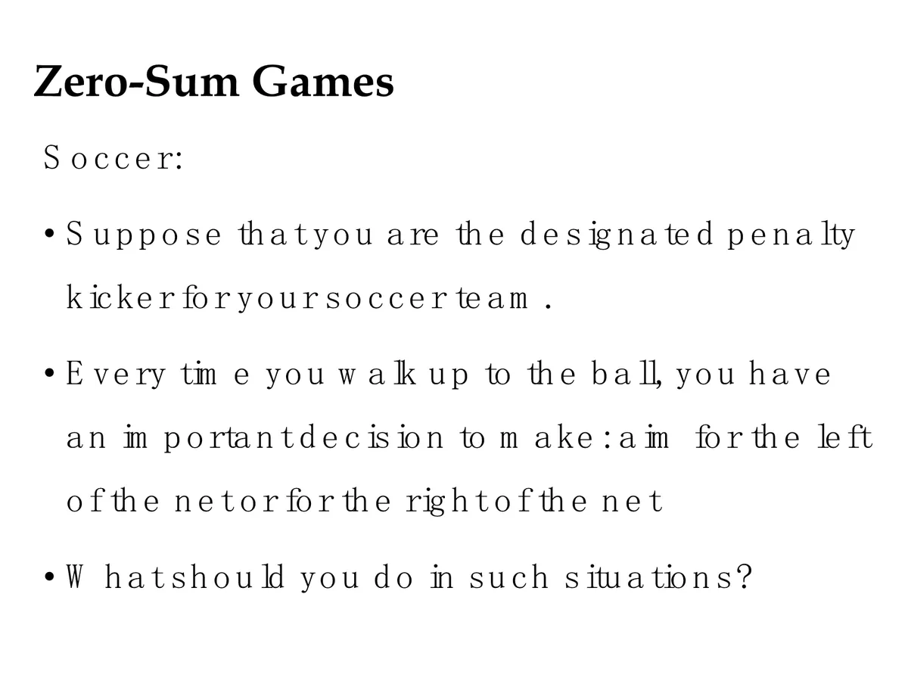
进入零和博弈（zero-sum games）。场景：足球点球。
你是球队指定的罚球手，每次走上罚球点都要做一个决定：往球门左边踢，还是右边踢。
注意这里没有「更好的那一边」——只有「对方想不到的那一边」。这是零和博弈的共同特征：你多得一分，必然是他少得一分。
幻灯片原文 / 板书
Zero-Sum Games --- Soccer: Suppose that you are the designated penalty kicker for your soccer team. Every time you walk up to the ball, you have an important decision to make: aim for the left of the net or for the right of the net What should you do in such situations?
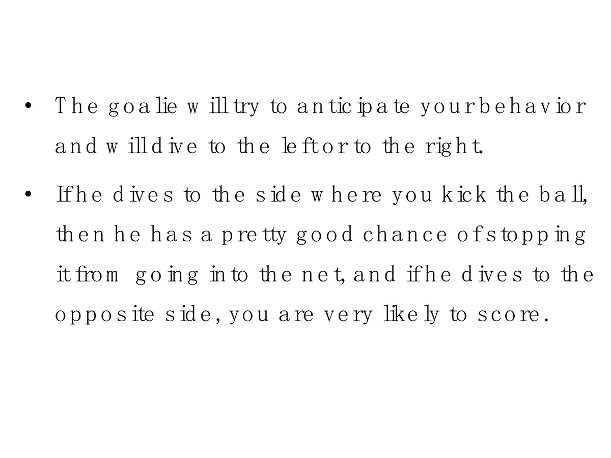
门将会试图预判你的方向，向左扑或向右扑。
- 他扑对边：有很大机会把球挡出；
- 他扑错边：你几乎必进。
于是双方都活在「被猜到就完蛋」的状态里。这一页只是描述，还没有数字——下一页把输赢写成矩阵。
这类博弈有个共同结构：双方都希望对方猜错。凡是这样的场景——点球、网球发球、石头剪刀布、军事突袭——纯策略都会被对手学走，最后只能靠随机化活下来。
幻灯片原文 / 板书
The goalie will try to anticipate your behavior and will dive to the left or to the right. If he dives to the side where you kick the ball, then he has a pretty good chance of stopping it from going into the net, and if he dives to the opposite side, you are very likely to score.
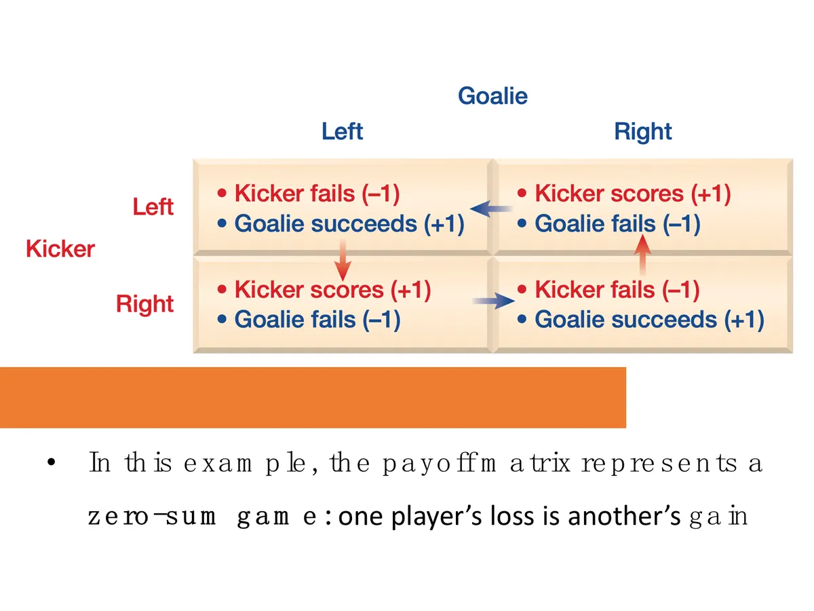
矩阵（行 = 射手，列 = 门将）：
| Kicker \ Goalie | Left | Right |
|---|---|---|
| Left | −1, +1 | +1, −1 |
| Right | +1, −1 | −1, +1 |
这是零和博弈：一人的所得恰是另一人的所失，每格两个数字相加为 0。
图上四个箭头：每一格都只有一个人想改（扑错的那个），所以没有一格能让双方都满意——均衡不存在。
幻灯片原文 / 板书
In this example, the payoff matrix represents a zero-sum game: one player’s loss is another’s gain
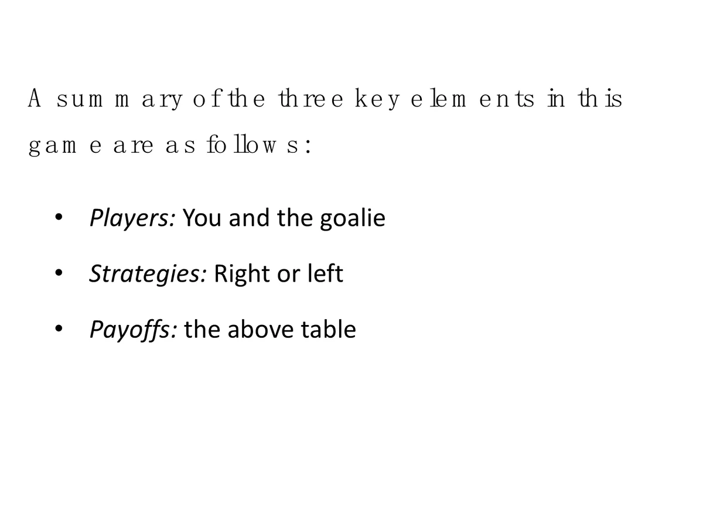
三要素总结：
- Players：You（射手）与 Goalie（门将）；
- Strategies：Left / Right；
- Payoffs：上一页的表。
注意：策略空间极小（各两个），可均衡偏偏不存在纯策略解。这提醒我们——策略少不等于问题简单，反而因为「太好猜」而更需要随机化。
幻灯片原文 / 板书
A summary of the three key elements in this game are as follows: --- Players: You and the goalie Strategies: Right or left Payoffs: the above table
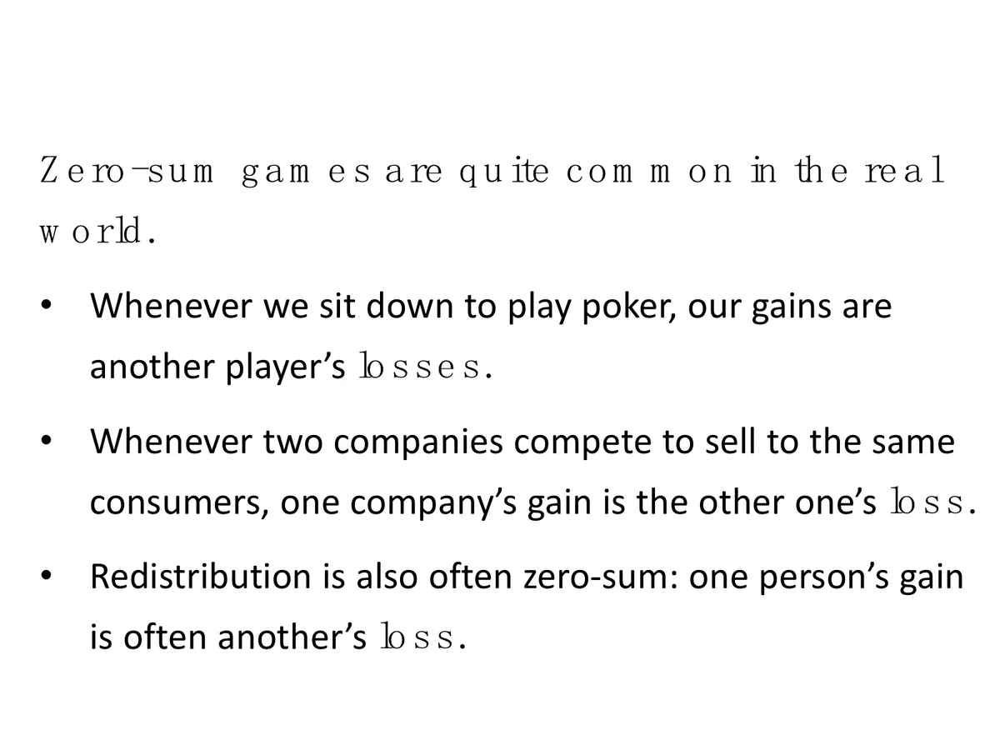
零和博弈在现实中很常见：
- 打扑克：你赢的正是别人输的；
- 两家公司抢同一批消费者：一家的份额就是另一家的损失；
- 再分配：一个人的所得常常是另一个人的所失。
老师补充：识别零和很重要。如果一件事真是零和，「双赢」的说法就是错的，能谈的只有分配——这也解释了为什么某些谈判怎么谈都谈不出增量。
幻灯片原文 / 板书
Zero-sum games are quite common in the real world. Whenever we sit down to play poker, our gains are another player’s losses. Whenever two companies compete to sell to the same consumers, one company’s gain is the other one’s loss. Redistribution is also often zero-sum: one person’s gain is often another’s loss.
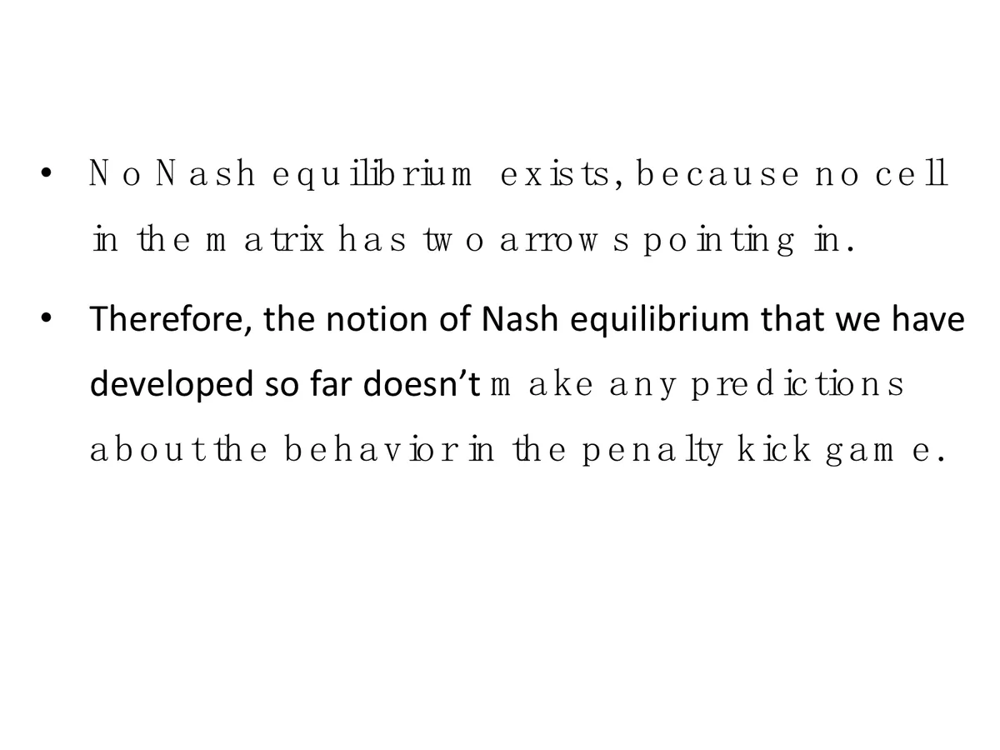
为什么没有纳什均衡？用箭头法看：没有任何一格是两个箭头都指向内的。
每一格总有一方想单方面改：扑错边的想换边；扑对边的那位也拦不住对方换边。
于是「纯策略纳什均衡」这个工具在这里给不出预测。不是理论错了，是工具不够——我们需要升级工具箱，下一页开始。
幻灯片原文 / 板书
No Nash equilibrium exists, because no cell in the matrix has two arrows pointing in. Therefore, the notion of Nash equilibrium that we have developed so far doesn’t make any predictions about the behavior in the penalty kick game.
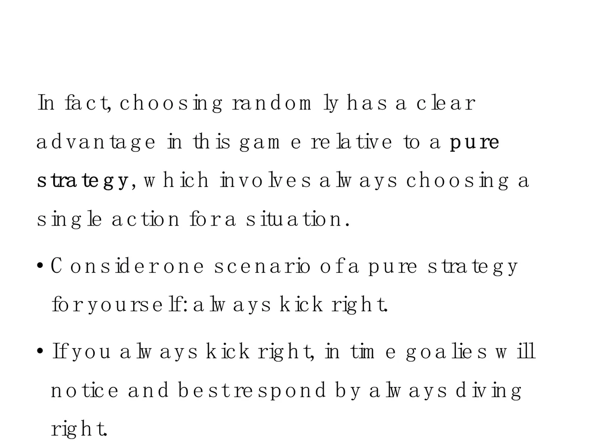
先看纯策略（pure strategy）为什么不行：纯策略就是「遇到这个情形，我永远选同一个动作」。
假设你永远踢右边。门将迟早会发现，然后永远扑右边，你的成功率大跌。
任何可预测的行为都会被对手利用。这条规律对门将同样成立，所以双方都被逼着离开纯策略。
幻灯片原文 / 板书
In fact, choosing randomly has a clear advantage in this game relative to a pure strategy, which involves always choosing a single action for a situation. Consider one scenario of a pure strategy for yourself: always kick right. If you always kick right, in time goalies will notice and best respond by always diving right.
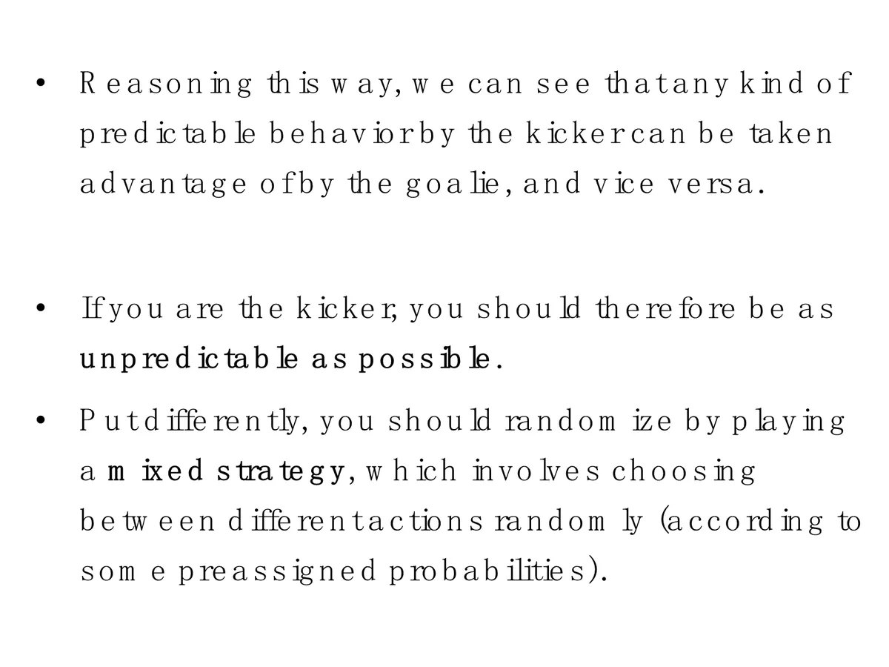
结论：如果你是可预测的，你就输了；所以理性做法是尽量不可预测。
工具叫混合策略（mixed strategy）：按照预先设定的概率，在不同行动之间随机选择。
关键词是「预先设定」——不是临场拍脑袋，而是事先定好一个概率，然后照此执行。这样连你自己都不知道这次会踢哪边，对手更不可能知道。
幻灯片原文 / 板书
Reasoning this way, we can see that any kind of predictable behavior by the kicker can be taken advantage of by the goalie, and vice versa. If you are the kicker, you should therefore be as unpredictable as possible. Put differently, you should randomize by playing a mixed strategy, which involves choosing between different actions randomly (according to some preassigned probabilities).
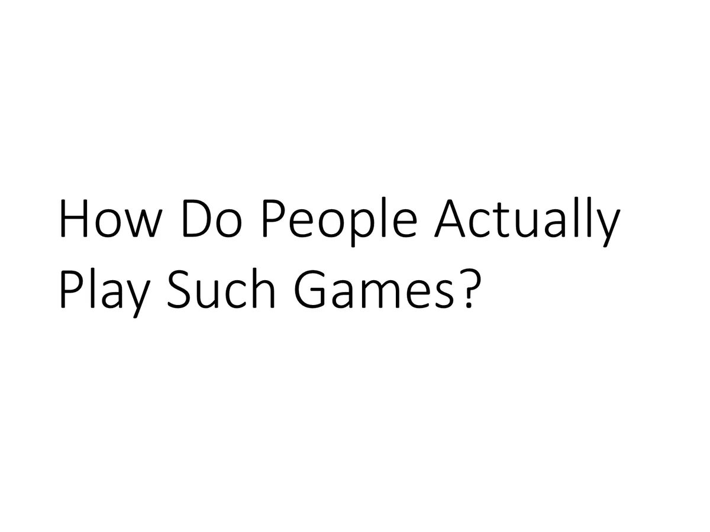
过渡页：人们实际上怎么玩这类博弈？
前面所有内容都是「应该怎么玩」，从这页起转向「实际怎么玩」。这是博弈论从纯理论走向实证检验的转折点，也是本讲最有趣的一段。
为什么要专门讨论这个？因为一门只在纸上自洽的理论，和一门能预测球场、市场、谈判桌上行为的理论，价值完全不同。接下来的问题是：理论能不能被数据打脸？
幻灯片原文 / 板书
How Do People Actually Play Such Games?
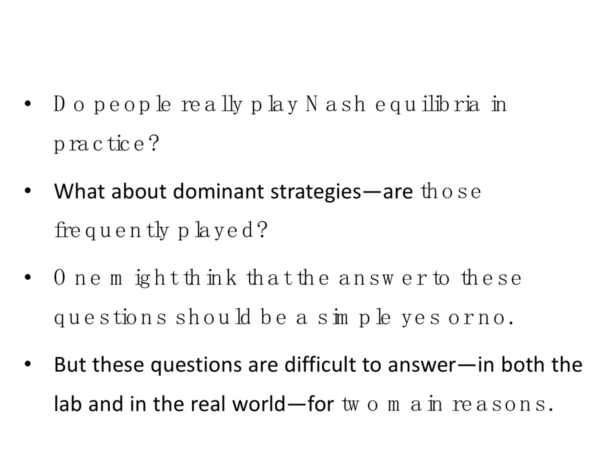
问题：现实中的人真的会玩纳什均衡吗？占优策略常见吗？
直觉上答案该是干脆的「是」或「否」。但课件说：这些问题很难回答，在实验室里难，在真实世界里也难，原因有两个。
难在什么地方？难在你必须先知道收益，才有资格判断一个行为是否「最优」；而收益恰恰是最难观测的东西。这跟消费者理论里的显示偏好是同一个困难，只是更严重——那里你至少能看到价格。
下一页、再下一页分别讲这两个原因。
幻灯片原文 / 板书
Do people really play Nash equilibria in practice? What about dominant strategies—are those frequently played? One might think that the answer to these questions should be a simple yes or no. But these questions are difficult to answer—in both the lab and in the real world—for two main reasons.
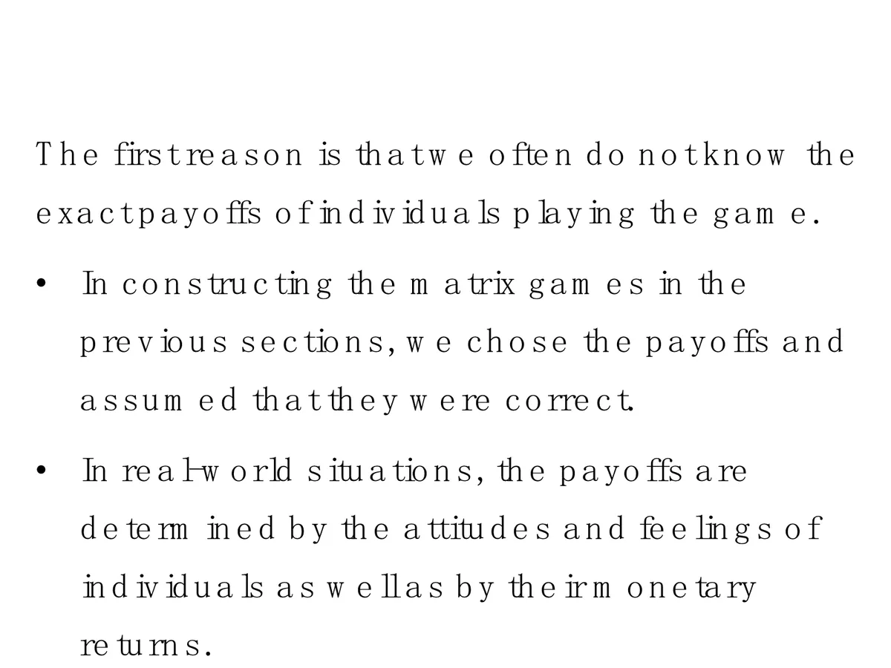
原因一：我们不知道真实的收益。
前面矩阵里的数字是我们自己挑的，并且假设它们正确。真实世界里，收益由金钱回报、态度、情绪、面子共同决定，很多根本无法观测，更无法量化。
老师补充：这就是博弈论版本的认识论困难——你观察到的是行动，不是收益；而同一个行动可以由完全不同的收益结构生成。
幻灯片原文 / 板书
The first reason is that we often do not know the exact payoffs of individuals playing the game. In constructing the matrix games in the previous sections, we chose the payoffs and assumed that they were correct. In real-world situations, the payoffs are determined by the attitudes and feelings of individuals as well as by their monetary returns.
原因二：博弈论只是一个理论。
模型不是对世界的字面描述，而是有用的抽象。抽象必然丢掉细节，丢掉的可能恰好是决定行为的那一点。
所以当预测失败时，先别急着说「人不理性」，要先问：是不是模型把某个重要收益（公平、面子、报复的快感）漏掉了？
幻灯片原文 / 板书
A second reason: game theory is only a theory Models/theories are not literal descriptions of how the world works—they are merely useful abstractions. As such, game theory abstracts from several details.
还有两个具体的偏离来源：
- 能力差异：两个棋手对弈，更老练、更聪明的那个大概率赢——而博弈论假设双方「同样会算」。
- 重复：矩阵博弈重复多次后，结果通常更接近纳什均衡——学习和惩罚都需要时间。
带着这些保留意见，我们去看一个能真正检验理论的案例：点球。
幻灯片原文 / 板书
In many situations, one player may be more cunning, wiser, or more experienced than another. For example, of two chess players, the more experienced, more clever player is likely to win. In many matrix games (with two or several players), repetition of the game usually ensures that results come closer to the Nash equilibrium. With these caveats in mind, we turn to an example to illustrate how game theory’s predictions fare in real-world situations.
回到点球。理论预测很明确：双方都应该用混合策略，每次随机选左或右。
问题于是变成实证问题：真实比赛里是这样吗？
如果球员有习惯、有「强侧」偏好，数据里就该看到系统性偏向；如果数据几乎是随机的，理论就赢了。这是一个可以被数据判死的命题。
幻灯片原文 / 板书
Game Theory in Penalty Kicks --- Consider again the situation faced by penalty kickers and goalies. As you have already learned, the best move for both sides is to employ a mixed strategy—randomly choose left or right for each kick. But is that what actually happens in soccer games?
三位经济学家真的去做了这件事。
他们整理了法国和意大利足球联赛三年内的所有点球，一共 459 个。
样本量足够大，可以统计每个射手、每个门将的方向分布，看它是否接近「按固定概率随机抽取」。
为什么选点球做检验？因为它几乎是理想实验室：规则固定、收益清楚（进球与没进）、双方同时决策、样本还多。而且职业球员有极强的动机隐藏自己的习惯——钱在逼他们随机化。
幻灯片原文 / 板书
Three economists decided to analyze all the penalty kicks taken during a 3-year period in the French and Italian soccer leagues in order to test game theory. By examining 459 penalty kicks, they were able to test whether the players actually did play mixed strategy Nash equilibria.
他们把选择分成三类：Left、Right、Center（左、右、中路）。
比前面左右二选一稍微复杂一点，但混合策略均衡的逻辑完全一样：双方都要在可选方向之间随机化，使对手无法通过偏向某一边来获利。
为什么要把中路单列？因为踢中路和扑中路的成功率、风险都不同：中路一旦被扑到几乎必失，可门将又很少站着不动。三类选择让随机化有了更丰富的空间，也让检验更严格。
幻灯片原文 / 板书
They classified kickers’ and goalies’ choices into one of three strategies: Left, Right, and Center. This is just a bit more complicated than our Left/Right example earlier in the chapter, but the logic of the game’s mixed-strategy Nash equilibrium is the same: penalty kickers and goalies should randomize across the choices.
结果：数据里射手和门将的方向选择几乎完美地随机。理论预测得非常好。
相关研究在职业网球的发球方向上，也发现了同样的随机化模式。
老师补充：这是博弈论最漂亮的经验证据之一——它说明均衡不必来自「人像计算机一样算」，竞争压力本身就能把行为逼到均衡，不理性的个体也能产生理性的总体。
幻灯片原文 / 板书
Amazingly, this is just what the economists found in the data. The kickers and goalies both seemed to be randomizing their direction choices almost perfectly. Game theory predicted the behavior of these players very well. A related study found a similar pattern of randomization in serve choices in professional tennis matches
过渡页：扩展式博弈（extensive-form games）。
前面所有博弈都是同时出手。从现在起，我们允许一个人先动，另一个看见之后再动。
就这一个改动，会让结论大变：先手可能占优，威胁可能不可信，承诺开始值钱。
为什么顺序这么重要？因为一旦有了先后，后手就能观察；一旦能观察，先手就必须考虑「我这么做之后他会怎么反应」。把这一步「预判对方的反应」形式化，就是下一页要干的事。
幻灯片原文 / 板书
Extensive-Form Games
定义：到目前为止，博弈都是两人同时选行动，谁也不知道对方选了什么。
现在改成：一个玩家先走，另一个玩家在看到第一个人的选择之后才行动。
这种「明确规定了行动顺序」的博弈，叫扩展式博弈，用博弈树（game tree）来表示。
幻灯片原文 / 板书
The games that we have discussed so far all revolve around two players choosing an action simultaneously. Suppose that, instead, one player goes first and the other chooses an action only after seeing how the first player chose. This type of situation, which specifies the order of play, is represented by an extensive-form game.
这一页是空白过渡页（没有文字也没有图），作用是在「同时」与「序贯」之间按一个暂停键。
趁这个空档记住下面读树的三条规矩，下一页直接用：
- 节点是「轮到谁做决定」；
- 枝是他的可选动作；
- 末端的数字是（先手收益, 后手收益），顺序不能颠倒。
扩展式博弈里，策略比同时博弈丰富得多。
同时博弈里，一个策略就是一个动作（认罪/不认罪）。序贯博弈里，一个策略是一份完整的行动计划：在每一个可能轮到我做决定的节点上，我分别做什么——哪怕那个节点根本不会走到。
老师补充：这就是为什么序贯博弈的「策略数量」会爆炸，也是为什么我们更愿意画树、用逆向归纳，而不是列矩阵。
幻灯片原文 / 板书
In extensive-form games, the strategies are a little bit richer than in simultaneous games
博弈树（work-or-surf）：你先决定 Work 还是 Surf；Gina 观察到之后，再决定 Work 还是 Surf。
四个末端，数字是（你, Gina）：
| 你的选择 | Gina 的选择 | 收益 |
|---|---|---|
| Work | Work | 400, 400 |
| Work | Surf | 300, 500 |
| Surf | Work | 500, 300 |
| Surf | Surf | 200, 200 |
注意收益结构是对称的：两人偏好一样，只是先后不同。
幻灯片原文 / 板书
A game tree
解法叫逆向归纳（backward induction）：从最后一个做决定的人开始解，解出他的选择，代回去；再看倒数第二个，如此一路往前推。
直觉很朴素：先算清「如果真走到这里，他会怎么做」，再决定要不要走到这里。
这也是「序贯理性」的技术含义——每一步都要求当事人在那一步是最优的，而不是整体最优。
幻灯片原文 / 板书
Backward Induction --- The easiest way of approaching any extensive-form game is to use backward induction. Backward induction is the procedure of solving an extensive-form game by first considering the last mover’s decision. Given the last mover’s decision, we then consider the second-to- last mover, and so on.
解这棵树：
- 你若选 Work，Gina 会选 Surf（500 > 400），你得 300；
- 你若选 Surf，Gina 会选 Work（300 > 200），你得 500。
所以你的最优选择是 Surf，Gina 随后选 Work，均衡结果是（500, 300）。
注意：两人的收益结构完全一样，结果却系统性偏向先手。这不是巧合，下一页给它命名。
幻灯片原文 / 板书
First-Mover Advantage, commitment --- The equilibrium described above is much more favorable to you than to Gina: you receive $500, whereas she receives $300. This outcome occurs even though the payoffs to the different actions are the same for you and Gina.
定义：如果先动的人比后动的人赚得多，这个序贯博弈就存在先手优势（first-mover advantage）。
先手优势最重要的来源之一，是承诺的价值（value of commitment）：先动等于把自己钉在一个位置上，后手只能适应你的位置。
老师补充：现实里「先发制人」的投资、抢先注册专利、率先降价，都是这个逻辑。
幻灯片原文 / 板书
We say that the sequential game features a first-mover advantage if the first mover earns more benefits than the second mover earns. One particularly relevant form of first-mover advantage is the value of commitment.
Gina 想翻盘，于是发出威胁：
「你要是去冲浪，我也去冲浪！」
如果你信了，你会这样算：选 Surf 时 Gina 也 Surf，你只得 200，不如选 Work 拿 400——于是你乖乖去工作。威胁成功。
但真正的问题是：你该信吗？
注意这个威胁的结构：它要求 Gina 在对自己不利的情况下执行一个动作。这种威胁能不能成立，从来不取决于她说得多坚决，只取决于她到时候的收益——所以先别动感情，去算数字。
幻灯片原文 / 板书
Suppose Gina threaten you with punishment, using the following strategy: “If you surf, I will go surfing, too!” If you believed in her，what would happen?

（图）树本身没变，只是把 Gina 那个节点标了出来：在「你已经选了 Surf」之后，她面对 Work（300）和 Surf（200）两个选项。
问题的答案就藏在这两个数字里。下一页算。
读序贯博弈有个笨办法，但非常可靠：把每一个「如果真走到这里」的子树单独拎出来，当作一个小博弈来解，解完把结果代回上一层。这棵树只有一棵这样的子树，所以一眼就能看完。
幻灯片原文 / 板书
A game tree
给定你已经 Surf，Gina 选 Work 得 300，选 Surf 得 200——她的威胁对自己不利，所以不会执行。
这种「说了也不会做」的威胁，叫不可信威胁（non-credible threat）。逆向归纳会自动把它剔除：它根本不进入你的计算。
一句话：威胁是否可信，不看语气，看激励。
幻灯片原文 / 板书
A game tree --- But are you going to believe in her? In other words, is her threat credible?
Gina 有办法真翻盘：做一个可信承诺（credible commitment）。
定义：一个无法反悔的行动，即使它本身是有代价的。
两个条件缺一不可：不可逆（irreversible）+ 可观察（observable）。比如她提前把冲浪板卖掉、或先跟老板签好当天的排班——「Surf」就真的从她的选项里消失了。
幻灯片原文 / 板书
Is there any way that Gina can turn the tables on you by taking away the first-mover advantage? In fact, there is. The trick is for her to make a credible commitment. A commitment is an action that one cannot turn back on later, even if it is costly.
这套逻辑能解释一类看起来不理性的行为：有人刻意（甚至下意识地）经营「记仇、报复」的声誉——谁敢惹我，我一定还手，哪怕还手对我也有成本。
单看一次报复，是亏的；但声誉一旦建立，它改变的是别人对你的预期，从而改变别人敢不敢惹你。
老师补充：这就是「理性地不理性」——用一次非理性的行动，买一个长期有利的名声。
幻灯片原文 / 板书
Several modes of behavior may be understood in light of this example. Suppose, for example, that you can consciously or subconsciously (truthfully, or perhaps just for show) establish a reputation as somebody who bears a grudge and who would seek revenge against misdeeds, even though this behavior is potentially costly for you.
结论：如果你能承诺惩罚欺负你的人，你大概率不会被欺负。
所以「复仇」和「报复的名声」在经济学意义上可以是理性的：它是一笔为威慑而预付的成本。
反面也一样清楚——「老好人」在某些博弈里最吃亏，因为他没有任何可置信的报复手段，别人知道欺负他不需要付代价。
幻灯片原文 / 板书
If you can commit to punishing bullies, you likely won’t be bullied. This reasoning also suggests that perhaps vengeance or a reputation for revenge-seeking behavior might be supported by game theory In other words, these behaviors are rational in an economic sense.
过渡页：博弈的应用（Game Applications）。
接下来把同一套工具反复用在不同场景上，按四类推进：
工具不变，场景在变——这正是博弈论被称为「通用语言」的原因。
幻灯片原文 / 板书
Game Applications
标题页：最优反应曲线与纳什均衡。
前面用箭头法在格子里找均衡；从现在起改用曲线：把「最优反应」画成图，两条曲线的交点就是纳什均衡。
为什么值得换？因为箭头法只能处理有限个格子，而曲线法能处理连续变量，也是后面所有应用的标准画法。
幻灯片原文 / 板书
Best Response Curves and Nash Equilibrium
如果对对手的每一个选择，玩家都有唯一的最优反应，那么最优反应就可以写成一个函数（best response function），画出来是一条曲线。
后面你会发现：这条曲线常常是阶梯状的，而不是平滑的。原因很简单——最优反应往往「要么选这个、要么选那个」，中间只有一个「无所谓」的跳跃点。
幻灯片原文 / 板书
Best Response Curves --- If there is a unique best response for each choice, then the best response curves can be represented as best response functions.
进入混合策略的代数。设定：
- 行玩家（Row）以概率 r 选 Top，以 1−r 选 Bottom；
- 列玩家（Column）以概率 c 选 Left，以 1−c 选 Right。
当 r、c 只取 0 或 1 时，就是纯策略；取中间值就是混合策略。所以混合策略不是新东西，是纯策略的推广——这一点在考试里常被问。
幻灯片原文 / 板书
Mixed Strategies --- Row chooses probability r of playing top and column chooses probability c of playing left.
把四种组合的概率与收益列成表，这是通用算法模板：
| 组合 | 概率 | Row 的收益 |
|---|---|---|
| Top, Left | rc | 2 |
| Bottom, Left | (1−r)c | 0 |
| Top, Right | r(1−c) | 0 |
| Bottom, Right | (1−r)(1−c) | 1 |
期望收益 = 概率 × 收益，逐项相加。注意「独立抽取」的假设：两人各自随机，所以联合概率是乘积。
算出来：
Row's payoff = 2rc + (1−r)(1−c) = 2rc + 1 − r − c + rc
对 r 求增量：Δpayoff = 2cΔr − Δr + cΔr = (3c − 1)Δr
同理 Column's payoff = cr + 2(1−c)(1−r)，Δpayoff = (3r − 2)Δc
关键洞察：Row 的边际收益只取决于 c，不取决于 r。自己的概率不影响自己的边际激励，只影响对方的。
幻灯片原文 / 板书
Mixed Strategies
---
The expected payoff to row:
Row’s payoff = 2rc + (1 − r)(1 − c) = 2rc + 1 − r − c + rc
Δpayoff to row = 2c Δr − Δr + c Δr = (3c − 1)Δr.
Similarly, the payoff to column:
Column’s payoff = cr + 2(1 − c)(1 − r)
Δpayoff to column = r Δc + 2r Δc − 2Δc = (3r − 2)Δc.整理成截距式：
- Row's payoff = (3c − 1)r + 1 − c
- Column's payoff = (3r − 2)c + 2 − 2r
于是最优反应一目了然：
- c < 1/3 → (3c−1) < 0 → r 越小越好 → r = 0；
- c = 1/3 → r 取任何值都一样 → 任意 r；
- c > 1/3 → r = 1。
幻灯片原文 / 板书
Mixed Strategies --- Row’s payoff = (3c−1)r+1−c Δpayoff to row = (3c − 1)Δr. Column’s payoff = (3r−2)c+2-2r Δpayoff to column = (3r − 2)Δc. --- We can use this information to plot the best response curves. Start with row. If column choses c = 0, row will want to make r as small as possible, so r = 0 is the best response to c = 0. This choice will continue to be the best response up until c = 1/3, at which point any value of r between 0 and 1 is a best response. For all c > 1/3, the best response row can make is r = 1.
把两条最优反应曲线画出来（横轴 r、纵轴 c），它们交于三点：
- (0, 0)：纯策略（Bottom, Right）；
- (2/3, 1/3)：混合策略；
- (1, 1)：纯策略（Top, Left）。
三个都是纳什均衡——两个纯、一个混。曲线都是阶梯形的：最优反应要么 0 要么 1，中间只有一处「怎么选都一样」的跳跃。
幻灯片原文 / 板书
Mixed Strategies --- It is easy to see that they cross in three places: (0, 0), (2/3, 1/3), and (1, 1), which correspond to the three Nash equilibria of this game. Two of these strategies are pure strategies, and one is a mixed strategy. --- Row’s payoff = (3c−1)r+1−c Δpayoff to row = (3c − 1)Δr. Column’s payoff = (3r−2)c+2-2r Δpayoff to column = (3r − 2)Δc.
转入协调博弈（coordination games）：双方收益最高的时候，是策略能对上的时候。
问题在于：没有任何机制保证你们能自动对上。你选左、他选右，两人一起受损。
所以这类博弈的核心议题不是「怎么算」，而是「怎么建立协调机制」——沟通、惯例、合同、先动者的示范。
幻灯片原文 / 板书
Games of Coordination --- Coordination games: games where the payoffs to the players are highest when they can coordinate their strategies. There is no way to ensure that players can coordinate automatically, however The problem then is to develop mechanisms that enable this coordination.
例子：Battle of the Sexes（性别之战）。
男孩和女孩想一起看电影，但事先没约好。男孩偏爱动作片，女孩偏爱文艺片，两人无法沟通，只能猜对方会去哪。
注意冲突的性质：不是「想不想在一起」（两人都想），而是「在一起看哪一部」。共同利益与利益分歧同时存在，这是协调博弈的典型结构。
幻灯片原文 / 板书
Example: Battle of the Sexes --- A boy and a girl want to meet at a movie for a date, but haven’t had a chance to arrange which one. The boy prefers action movies, while the girl prefers art films. They have no way to coordinate their meeting Have to guess which movie the other will want to attend.
矩阵：
| Boy \ Girl | Action | Art |
|---|---|---|
| Action | 2, 1 | 0, 0 |
| Art | 0, 0 | 1, 2 |
读法：只有「碰上」才有正收益。都看动作片，男孩得 2、女孩得 1；都看文艺片反过来。
问题：纳什均衡有哪些？先用箭头法自己走一遍，再看下一页。
幻灯片原文 / 板书
What are the Nash equilibria of this game? --- Example: Battle of the Sexes
三个均衡：
- 都看动作片：（2, 1）；
- 都看文艺片：（1, 2）；
- 混合：各以 2/3 的概率选自己偏好的那一部——男孩 2/3 概率选 Action，女孩 2/3 概率选 Art。
前两个是纯策略，第三个是混合策略。注意混合均衡下两人的期望收益都低于任一纯均衡——所以「随机」在这里是无奈，不是最优。
幻灯片原文 / 板书
Battle of the Sexes --- Three equilibria: both choose action, both choose art, or each chooses his or her preferred choice with probability 2/3.
多重均衡下，理论说不清哪一个会发生，于是我们向博弈之外找线索。
例如：文艺片的影院离其中一人更近，那么「都看文艺片」就成了自然的选择。
当玩家有理由相信某个均衡比其他更「自然」时，这个均衡叫焦点（focal point）。老师补充：这是谢林（Schelling）的概念，靠的是共同经验而不是数学——两个陌生人在纽约走散，往往会在中央车站的大钟下碰头。
幻灯片原文 / 板书
Hard to predict which equilibrium will occur Generally, we would look to considerations outside the formal description of the game to resolve the problem. For example, suppose that the art film was a closer destination for one of the two players. Then both players might reasonably suppose that would be the equilibrium choice. When players have good reasons to believe that one of the equilibria is more “natural” than the others, it is called a focal point of the game. --- Battle of the Sexes
有意思的是：囚徒困境也能看成协调博弈——双方都想协调到（Hold Out, Hold Out），只是做不到。
两条出路：
- 扩大博弈：无限重复的囚徒困境可以用「tit for tat（以眼还眼）」策略维持合作——这是更高级课程的内容；
- 引入合同：让承诺变得可执行，把「说好的」变成「必须的」。
老师补充：这两条正是现实中解决囚徒困境的主要手段——长期关系与第三方执法。
幻灯片原文 / 板书
Example 2: prisoner’s dilemma --- Prisoner’s Dilemma is also a coordination game One way out of the prisoner’s dilemma is to enlarge the game by adding new choices. Example (在更高级的课程中会讲授）: An infinitely repeated prisoner’s dilemma game could achieve the cooperative outcome via strategies like tit for tat （”以眼还眼以牙还牙”） Another way to “solve” the prisoner’s dilemma is to add the possibility of contracting.
例子三：保证博弈（assurance games）。
1950 年代的美苏军备竞赛：每个国家都可以造核弹，也可以不造。
| U.S. \ U.S.S.R. | Refrain | Build |
|---|---|---|
| Refrain | 4, 4 | 1, 3 |
| Build | 3, 1 | 2, 2 |
双方都最想要（Refrain, Refrain）——各得 4。但都怕对方造弹而自己吃亏（1 < 3），于是可能双双军备（2, 2）。
幻灯片原文 / 板书
Example 3: Assurance Games --- U.S.-U.S.S.R. arms race of the 1950s Each country could build nuclear missiles or refrain from building them.
困难在于：谁也不知道对方会怎么选。
在承诺「不造」之前，每一方都想要对方先给一个保证（assurance）——这就是这个博弈名字的由来。
一种办法是先动：主动开放本国接受核查，把「我不造」变成可观察的事实。
注意它和囚徒困境的区别：这里双方都宁愿一起不造、而不是一起造；问题只是信任，不是激励方向。
幻灯片原文 / 板书
The trouble is, neither party knows which choice the other will make. Before committing to refrain, each party wants some assurance that the other will refrain. One way to achieve this assurance is for one of the players to move first, for example, by opening itself to inspection
例子四：斗鸡博弈（chicken）。
两个少年从街道两头对开，谁先打方向盘谁丢面子；都不让就撞车。
| Row \ Column | Swerve | Straight |
|---|---|---|
| Swerve | 0, 0 | −1, 1 |
| Straight | 1, −1 | −2, −2 |
撞车（−2, −2）对双方都最糟。注意：这里「做不同的事」才是好结果。
幻灯片原文 / 板书
Example 4: Chicken --- Two teenagers start at opposite ends of the street and drive in a straight line toward each other. The first to swerve loses face; if neither swerves, they both crash into each other.
两个纯策略纳什均衡：（Straight, Swerve）与（Swerve, Straight）。
列玩家偏好前者（他得 1），行玩家偏好后者（他得 1）；但任何一个均衡都好过撞车。
与保证博弈对比一下：那里「做同样的事」更好；这里「做不同的事」才更好。所以斗鸡里先让一步的人吃亏，而保证博弈里先跑的人占便宜。
幻灯片原文 / 板书
Example 4: Chicken --- Two pure strategy Nash equilibria Column prefers the first equilibrium and row the second, but each equilibrium is better than a crash.
于是问题变成：怎么把均衡推到自己偏好的那一个？答案是承诺。
设想行玩家出发前大张旗鼓地把方向盘锁死。列玩家看见了，知道行玩家只能直行，于是选择避让。
关键在两个条件：这个动作必须可见（对方看得到）且不可逆（自己解不开）。偷偷锁上没用，能随时解开也没用——那是空话，不是承诺。
幻灯片原文 / 板书
So how can one of the players enforce his preferred equilibrium? One important strategy is commitment. Suppose that row ostentatiously fastened a steering wheel lock on his car before starting out. Column, recognizing that row now has no choice but to go straight, would choose to swerve.
《史记·项羽本纪》给了同一个逻辑的古典版本：
项羽乃悉引兵渡河，皆沉船，破釜甑，烧庐舍，持三日粮，以示士卒必死，无一还心。
破釜沉舟就是烧掉自己的退路：把「撤退」从策略集里删掉，士兵于是只能死战。
这是承诺的极端形式——代价极大，但正因如此可信。对手看见你没有退路，就只能按你的条件来。
幻灯片原文 / 板书
《史记·项羽本纪》 --- 项羽乃悉引兵渡河，皆沉船，破釜甑，烧庐舍，持三日粮，以示士卒必死，无一还心。于是至则围王离，与秦军遇，九战，绝其甬道，大破之，杀苏角，虏王离。涉间不降楚，自烧杀。当是时，楚兵冠诸侯。诸侯军救巨鹿下者十余壁，莫敢纵兵。及楚击秦，诸将皆从壁上观。楚战士无不一以当十，楚兵呼声动天，诸侯军无不人人惴恐。于是已破秦军，项羽召见诸侯将，入辕门，无不膝行而前，莫敢仰视。
这一页把协调类博弈收成一张总表：
| 博弈 | 协调方式 |
|---|---|
| 保证博弈 | 在双方都喜欢的均衡上合作 |
| 性别之战 | 在某一方喜欢的均衡上合作 |
| 斗鸡 | 选择向自己偏好的结果 |
| 囚徒困境 | 玩均衡策略之外的东西 |
共同手段：序贯行动（先动 + 承诺）、重复、合同。三者本质相同——都是往博弈里加一条「不能反悔」的约束。
幻灯片原文 / 板书
Games of Coordination --- How to Coordinate --- Assurance Games (cooperate at an equilibrium that you both like) --- Battle of the Sexes (cooperate at an equilibrium one of you likes) --- Chicken (make a choice leading to your preferred outcome) --- Prisoner’s Dilemma (play something other than the equilibrium strategy) --- Sequential moves (one player’s moving first, and committing herself to a particular choice.) --- Repetition/ contracting
转入竞争博弈：合作的反面，零和博弈最纯粹。
再看点球：Row 踢点球，可以踢左或踢右；Column 守门，可以扑左或扑右。
这一页只是重新设定场景，把符号从「你/门将」换成「Row/Column」，方便后面写代数。下一页给出贴近真实的具体成功率。
幻灯片原文 / 板书
Games of Competition --- The opposite pole from cooperation is competition. Zero-sum games Let us illustrate a zero-sum game by looking at soccer. Row is kicking a penalty shot and column is defending. Row can kick to the left or kick to the right; column can favor one side and defend to the left or defend to the right in order to deflect the kick.
具体成功率（数字是百分数）：
| Row \ Column | Defend left | Defend right |
|---|---|---|
| Kick left | 50, −50 | 80, −80 |
| Kick right | 90, −90 | 20, −20 |
读法：踢左遇扑左只有 50%，遇扑右 80%；踢右遇扑左 90%，遇扑右只有 20%。
注意：Row 没有占优策略——踢左在对方扑右时更好，踢右在对方扑左时更好。
幻灯片原文 / 板书
Penalty Kick Game --- Row will score 80 percent of the time if he kicks to the left and column jumps to the right; but only 50 percent of the time if column jumps to the left. If row kicks to the right, he succeeds 90 percent of the time if column jumps to the left but 20 percent of the time if column jumps to the right.
显然，Column 若知道方向就占尽优势。Row 于是要让 Column 一直猜：有时踢强侧，有时踢弱侧。
这就是混合策略。设 Row 踢左的概率为 p（踢右为 1−p），Column 扑左的概率为 q（扑右为 1−q）。
接下来两页用两种办法求 p 和 q：一是画最优反应曲线，二是让对手无差异。
幻灯片原文 / 板书
Penalty Kick Game --- Obviously, if column knows which way row will kick she will have a tremendous advantage. Row, recognizing this, will therefore try to keep column guessing. In particular, he will kick sometimes to his strong side and sometimes to his weak side. That is, he will pursue a mixed strategy. Assume that row kicks left with probability p.
（图）横轴 p、纵轴 q，两条最优反应曲线交于一点，坐标 (0.7, 0.6)：
- Column 的最优反应是 p = 0.7 处的一条竖线——p 一旦超过它，Column 就改扑另一边；
- Row 的最优反应是 q = 0.6 处的一条横线；
- 交点就是唯一的混合策略纳什均衡。
另一种解法，更有用：让对手无差异。
- 找 p 使 Column 扑左与扑右的期望收益相等 → 得 p = 0.7。此时 Column 扑哪边都一样，Row 就榨不出更多。
- 找 q 使 Row 踢左与踢右的期望收益相等 → 得 q = 0.6。此时 Row 踢哪边都一样，Column 也榨不出更多。
让对手无所谓，就是让自己最安全——这是混合策略均衡的核心直觉。
幻灯片原文 / 板书
Penalty Kick Game --- Another strategy to solve this game: Key observation: When row chooses 0.7, column is indifferent between jumping left and jumping right, or, for that matter jumping left with any probability q. Similar for the other side
转入共存博弈（games of coexistence）：鹰鸽博弈（hawk-dove game）。
同一物种内部有两种行为类型。两条野狗遇到一块食物，选择打（hawkish，鹰派）还是分（dovish，鸽派）。
收益高的类型繁殖更快，把自己的倾向传给后代。注意：这里的主角不是「会算的玩家」，而是演化。
幻灯片原文 / 板书
Games of Coexistence --- Hawk-dove game A single species that exhibits two kinds of behavior. When two wild dogs come across a piece of food, they have to decide whether to fight or to share. Fighting is called the hawkish strategy. Sharing is called a dovish strategy. The type that has the higher payoff reproduces more rapidly, passing its tendency to play hawk or dove on to its offspring.
矩阵：
| Row \ Column | Hawk | Dove |
|---|---|---|
| Hawk | −2, −2 | 4, 0 |
| Dove | 0, 4 | 2, 2 |
读法：鹰遇鹰两败俱伤（−2）；鹰遇鸽独吞（4）；鸽遇鹰让出（0）；鸽遇鸽平分（2）。
均衡里必然两种类型混合存在——全鹰会互相打残，全鸽会被鹰占便宜。问题只是：混合比例是多少？
幻灯片原文 / 板书
Hawk-dove game --- There will have to be some mixture of hawk types and dove types in equilibrium. What sort of mixture should we expect?
设群体中鹰的比例为 p，则鹰遇鹰的概率是 p，遇鸽的概率是 1−p。
- 鹰的期望收益：H = −2p + 4(1 − p)
- 鸽的期望收益：D = 2(1 − p)（遇鹰得 0，遇鸽得 2）
比较这两个数，就知道哪种类型繁殖得更快——也就是 p 会往哪边动。
幻灯片原文 / 板书
Assume the fraction playing hawk is p. Then a hawk will meet another hawk with probability p and a dove with 1 − p.
The expected payoff to the hawk type:
H = −2p + 4(1 − p).
The expected payoff to the dove type:
D = 2(1 − p).若 H > D，鹰的比例上升；若 H < D，鸽的比例上升。
种群均衡的唯一条件是两种类型的收益相等：
−2p + 4(1 − p) = 2(1 − p)
展开左边：4 − 6p = 2 − 2p，移项得 2 = 4p，所以 p = 1/2。
也就是一半鹰、一半鸽——这就是共存的比例。注意它不依赖总资源多少，只依赖四种相遇收益的相对大小；改变「鹰遇鹰」的损失（比如打斗更血腥），比例就会跟着变。
幻灯片原文 / 板书
If H>D, the fraction of hawk types in the population increase, and if H<D, the number of dove types increase. The only way the population can be in equilibrium is if the payoffs to each type are the same: H = −2p + 4(1 − p) = 2(1 − p) = D, or p = 1/2.
（图）横轴 p（鹰的比例），纵轴是收益，两条线在 p = 1/2 处相交。
读图的要点：交点左侧鹰占优（H > D），鹰会变多；交点右侧鸽占优，鸽会变多。所以比例被自动推回 1/2。
注意这种「自己纠偏」的性质——它比单纯的「没人想改」更强。
幻灯片原文 / 板书
Games of Coexistence --- Hawk-dove game
p = 1/2 不仅是均衡，而且在演化力量下稳定：偏离会被推回来。
这类策略叫演化稳定策略（evolutionarily stable strategy，ESS）。
老师补充：ESS 是纳什均衡的演化版——它不要求玩家会算，只要求繁殖率会筛。凡是「能被一小群突变者入侵」的策略，都活不下来。
幻灯片原文 / 板书
Hawk-Dove Game --- p = 1/2 is not only an equilibrium but it is also stable under evolutionary forces. Considerations of this sort lead to a concept known as an evolutionarily stable strategy or an ESS.
进入承诺博弈。在序贯（扩展式）博弈里，最重要的策略问题就是承诺。
课件把条件说得很死：这个承诺必须不可逆（irreversible），且能被对方观察到（observable）。
缺一个，承诺就只是空话——不可观察，对方不知道；可逆，对方知道你会反悔。
幻灯片原文 / 板书
Games of Commitment --- We now turn to sequential moves, or extensive-form game. An important strategic issue that arises in such games is commitment. Note that this committed choice must be both irreversible and observable by the other player.
例子：青蛙与蝎子。
蝎子请青蛙背它过河。青蛙犹豫，因为怕被蛰。蝎子保证不会——理由很硬：蛰了青蛙，它自己也沉下去淹死。
于是青蛙答应。渡到河中央，蝎子还是蛰了它。青蛙问为什么，蝎子答：「这是我的本性。」
注意：这里的收益里明确包含了「顺从本性的满足」，这是整个模型的关键。
幻灯片原文 / 板书
Games of Commitment --- The Frog and the Scorpion The frog and the scorpion. They were standing on the bank of the river, trying to figure out a way across. If the frog chooses to carry the scorpion, the scorpion will choose to sting him and both will die, but the scorpion will get satisfaction from fulfilling his natural instincts.
课件给的中文版：
一只蝎子想过河，请求青蛙背它。青蛙说：「我怎么能信你？你会蛰我。」蝎子说：「我为什么要蛰你？你死了，我也要淹死。」青蛙信了。到了河中间，蝎子蛰了它。青蛙临死前问：「你为什么这么做？」蝎子说：「对不起，我忍不住，这是我的本性。」
寓意：对方的承诺若与其收益不符，就不该信。
幻灯片原文 / 板书
青蛙和蝎子
---
一只蝎子请求一只青蛙背它过河。青蛙犹豫了，因为它担心蝎子会蛰它。蝎子向青蛙保证它不会这样做，因为蛰它是没有道理的，因为那样它们都会溺死。
青蛙被说服了，于是同意帮助。然而，在渡河途中，蝎子果然蛰了青蛙。眼看它们都将溺亡，青蛙问蝎子为什么要这么做。蝎子回答说：“这是我的本性。”树（收益顺序：蛙, 蝎）：
| 青蛙 | 蝎子 | 收益 |
|---|---|---|
| Carry | Sting | −10, 5 |
| Carry | Refrain | 5, 3 |
| Refuse | — | 0, 0 |
逆向归纳：蝎子蛰得 5 > 不蛰 3，所以一定蛰；青蛙预见到背的收益是 −10，不如拒绝得 0。
所以理性青蛙的选择是拒绝。
幻灯片原文 / 板书
The Frog and the Scorpion
悲剧在于：青蛙没搞懂蝎子的收益。它用「你也会死」去论证，可蝎子的收益函数里，「顺从本性」值 5，抵得过一起死。
教训：分析博弈要先看对方的收益，而不是对方的道理。
老师补充：这也是「听其言不如观其利」的博弈论版本——一个人的承诺能不能信，取决于他守约与违约的相对收益。
幻灯片原文 / 板书
Stinging has a higher payoff to the scorpion because “it is his nature” to sting. Hence the frog should rationally choose to refuse to carry the scorpion. Unfortunately, the frog didn’t understand the scorpion’s payoffs. Alas, this mistake was fatal for the frog.
聪明的青蛙会想办法让蝎子承诺不蛰：
- 把它的尾刺绑起来（消除选项）；
- 雇一只「杀手青蛙」报复它家人（提高违约成本）；
- 或者干脆雇一条船，不需要蝎子的合作（消除依赖）。
手段不同，本质一样：改变蝎子的收益——让蛰更贵，或让不蛰更值钱。
幻灯片原文 / 板书
Games of Commitment --- The Frog and the Scorpion A smart frog would figure out some way to make the scorpion commit to not stinging. He could, for example, tie his tail. Or he could hire a hit frog, who would retaliate against the scorpion’s family. Whatever the strategy, the critical thing for the frog to do is to change the payoffs to the scorpion by making stinging more costly or refraining more rewarding.
例子：仁慈的绑匪（kindly kidnapper）。
绑匪绑了人质，却发现拿不到赎金。该放人吗？人质当然保证不揭发——但他会守约吗？
关键在于假设：绑匪杀人会有心理成本，所以他不是冷血到底的那种人。这个假设决定了后面所有的数。
幻灯片原文 / 板书
Games of Commitment --- The Kindly Kidnapper Suppose some kidnappers abduct a hostage and then discover that they can’t get paid. Should they release the hostage? The hostage, of course, promises not to reveal the identity of the kidnappers. But will he keep this promise? We assume the kidnapper would feel bad about killing the hostage.
树（绑匪, 人质）：
| 绑匪 | 人质 | 收益 |
|---|---|---|
| Kill | — | −3, −10 |
| Release | Identify（指认） | −5, 5 |
| Release | Refrain（不指认） | 5, 3 |
逆向归纳：人质选择指认（5 > 3）；绑匪预见到这一点，于是选择 Kill（−3 > −5）。
注意：绑匪并不是坏，他是被预期逼的。
幻灯片原文 / 板书
Games of Commitment --- The Kindly Kidnapper
现在承诺问题转到人质身上：他怎么让绑匪相信他不会指认？
办法还是改变收益。例如让绑匪拍下自己不堪的照片并留在手上——一旦指认，照片就会被公开，人质要承担巨大成本。
这种策略叫交换人质（exchange of hostages）：双方各握一张能伤害对方的牌，于是谁都不敢先动。
幻灯片原文 / 板书
Games of Commitment --- The Kindly Kidnapper Now it is the hostage who has the commitment problem: how can he convince the kidnappers that he won’t renege on his promise and reveal their identity? The hostage needs to figure out a way to change the payoffs of the game. He might have the kidnappers photograph him in some embarrassing act and leave them with the photos. This sort of strategy is known as an “exchange of hostages.”. The embarrassing photo would impose costs on the hostage if it were released.
《史记·王翦列传》是同一个逻辑：
王翦行，请美田宅园池甚众。……「我不多请田宅为子孙业以自坚，顾令秦王坐而疑我邪？」
王翦率全国之兵出征，最怕秦王疑他造反。于是他反复索要田产——显得贪财而无大志，以此自证「我不会反」。
老师补充：这叫「自污以取信」——用可见的、不可逆的贪财，换取主上的信任。
幻灯片原文 / 板书
《史记·王翦列传》
---
王翦行，请美田宅园池甚众。始皇曰：‘将军行矣，何忧贫乎？’王翦曰：“为大王将，有功终不得封侯，故及大王之向臣，臣亦及时以请园池为子孙业耳。”
部下不解，王翦解释：
“夫秦王怚而不信人。今空秦国甲士而专委于我，我不多请田宅为子孙业以自坚，顾令秦王坐而疑我邪？”另一个实验：把两只猪放进长栏。一只强势（体型大、跑得快），一只弱势。
长栏一端有杠杆，按下后食物出现在另一端的食槽。去按杠杆要花力气、要跑一段路；留在食槽边则可以先吃。
这个设计很讲究：食物在远端，按杠杆的人必须跑一趟，而守着食槽的人不用跑。于是「跑得快」这件好事，反而变成了「你去跑」的理由。
问题：谁去按杠杆，谁留下来吃？
幻灯片原文 / 板书
Games of Commitment --- Some psychologists put two pigs, one dominant, one subordinate, in a long pen. At one end of the pen was a lever that would release a portion of food to a trough located at the other end of the pen. Which pig would push the lever and which would eat the food?
标题页：当优势变成劣势（When Strength Is Weakness）。
先猜一下结果：强势猪跑得快、吃得凶，应该通吃吧？
先把「优势」说清楚：它跑得快、抢得凶，所以跑到食槽边能抢到更多。可这两项本事在「该谁去按杠杆」这个问题上，恰恰让它成为最等不起的那一个。
下一页的表会给你反直觉的答案——这是本讲最值得记住的结论之一。
幻灯片原文 / 板书
When Strength Is Weakness
这一页是空白过渡页，只有标题和留白，作用是让你先押一个答案，再带着预期去看结果——先有预期，才有「反直觉」的冲击力。
押完再往下看：强势猪的「强」，恰恰使它成为那个必须去按杠杆的人——因为它机会成本最高，它等不起。经济学里这类现象有个统一的名字：优势的诅咒。
实验结果出人意料：强势猪去按杠杆，弱势猪守在食槽边。
强势猪按完冲过来，只抢到一点残渣；弱势猪吃掉了大部分。
原因很冷酷：弱势猪去按杠杆，回来什么都抢不到；强势猪不去按，损失更大（它本来能多吃）。于是强者被迫干苦活，弱者坐享其成。
一句话：实力越强，越没有「等」的资格。
幻灯片原文 / 板书
When strength is weakness --- Somewhat surprisingly the outcome of the experiment was that the dominant pig pressed the lever, while the subordinate pig waited for the food. The subordinate pig then ate most of the food, while the dominant pig rushed as fast as it could to the trough end of the pen, ending up with only a few scraps.
矩阵（行 = 弱势猪，列 = 强势猪）：
| Subordinate \ Dominant | Don't press | Press |
|---|---|---|
| Don't press | 0, 0 | 4, 1 |
| Press | 0, 5 | 2, 3 |
强势猪的 Press 是占优策略（5 > 0、3 > 1）；给定它按，弱势猪的最优是 Don't press（4 > 2）。
均衡（Don't press, Press）：弱势猪得 4，强势猪只得 1。
幻灯片原文 / 板书
When Strength Is Weakness
承诺问题不只在动物界，也不只在犯罪故事里，它同样是经济政策的核心。
下一页用「储蓄与社会保障」说明一件事：一代人的选择会改变下一代人的激励，从而反过来改变自己的选择。这种「预期改变行为、行为又印证预期」的循环，正是博弈论最擅长的东西。
幻灯片原文 / 板书
Saving and Social Security --- Commitment problems aren’t limited to the animal world. They also show up in economic policy.
设定：老一代选 Save（储蓄）或 Squander（挥霍）；年轻一代选 Support（赡养老人）或 Refrain（不赡养，自己存钱养老）。
| Older \ Younger | Support | Refrain |
|---|---|---|
| Save | 2, −1 | 1, 0 |
| Squander | 3, −1 | −2, −2 |
注意：老一代最想要的是（Squander, Support）= 3——自己花光，还指望孩子养。
幻灯片原文 / 板书
Games of Commitment --- Saving for retirement is an important example Two strategies for the older generation: save or squander. The younger gen: support their elders or save for their own retirement.
改成扩展式：老一代先动，年轻一代看到后再选。
| 老 | 年轻 | 收益（老, 少） |
|---|---|---|
| Squander | Support | 3, −1 |
| Squander | Refrain | −2, −2 |
| Save | Support | 2, −1 |
| Save | Refrain | 1, 0 |
逆向归纳：老若挥霍，年轻人只能赡养（−1 > −2）；老若储蓄，年轻人选择不赡养（0 > −1）。于是老挥霍、年轻人赡养，子博弈完美均衡（subgame perfect equilibrium）是（Support, Squander）。
幻灯片原文 / 板书
Games of Commitment --- Savings and Social Security Consider the time structure of the game:
Hold-up（敲竹杠）。
你雇承包商建仓库。快完工时，你觉得颜色不好看，要求重刷——这本来只是一笔小钱。
承包商开价 1500。你算了一下：换人至少要这么久、这么贵，而且你确实想要新颜色，于是你付了。
（重刷的实际成本只有 200。）那 1300 的差价，就是从你的「没有退路」里榨出来的。
幻灯片原文 / 板书
Hold Up 敲竹杠 --- You hire a contractor to build a warehouse. After the construction is almost done, you realize that the color is bad and ask the contractor to change the paint, which involves a trivial expense. The contractor charges you 1500. You recognize that it will cost you at least that much to delay completion until you can find a painter, and you really do want the new color, so, you pay the cost. (actual cost of painting is only 200……)
树（承包商, 客户）：
| 承包商 | 客户 | 收益 |
|---|---|---|
| Charge actual cost（按实收费） | — | 0, 1300 |
| Extort（敲竹杠） | Give in（认栽） | 1300, 0 |
| Extort | Find a painter（换人） | 0, −100 |
逆向归纳：客户认栽（0 > −100），承包商于是敲竹杠（1300 > 0）。
注意：客户不是傻，他是在已经被套住之后做最优选择。
企业怎么解决 hold-up？三条路：
- 合同：事先把价格、变更条款写清楚——最基本也最常用的答案；
- 承诺：让自己失去事后加价的能力（固定总价合同、押金、第三方托管）；
- 声誉：长期合作中，敲一次竹杠就丢掉以后所有的生意。
老师补充：资产专用性越强（越难换供应商），被 hold-up 的风险越大——这是交易成本经济学的核心命题。
幻灯片原文 / 板书
Hold Up --- How do firms solve the hold-up problem? The basic answer is contracts. Another way to solve the problem is through commitment. Another important factor is reputation.
Rubinstein 议价模型：Alice 和 Bob 分 1 美元，最多谈 3 天。
- 第 1 天：Alice 出价；
- 第 2 天：Bob 接受或还价；
- 第 3 天：Alice 出最后一口价；
- 三天谈不拢，两人都得 0。
这是「最后通牒」的重复版：每多谈一天，那 1 美元都缩水一点——所以时间是成本。
幻灯片原文 / 板书
Bargaining game
---
Rubinstein bargaining model
Alice and Bob, have $1 to divide between them.
They agree to spend at most three days negotiating over the division.
The first day, Alice will make an offer.
The next day, Bob either accepts or comes back with a counteroffer.
The third day, Alice gets to make one final offer.
If they cannot reach an agreement in three days, both players get zero.假设两人耐心不同：Alice 的收益每天按 α 折现，Bob 按 β 折现（0 < α, β < 1）。
另一个假设：无差异时，接受对方更偏好的那个方案。
从最后一天倒推：第 3 天 Alice 可以「要么接受要么拉倒」，她会给 Bob 他能接受的最小金额——按假设是 0。
幻灯片原文 / 板书
Bargaining
---
Assume Alice and Bob differ in their degree of impatience: Alice discounts payoffs in the future at a rate of α per day, and Bob discounts payoffs at a rate of β per day.
We also assume that if a player is indifferent between two offers, he will accept the one that is most preferred by his opponent.
We start our analysis at the end of the game, right before the last day.
At this point Alice can make a take-it-or-leave-it offer to Bob.
Clearly, the optimal thing for Alice to do at this point is to offer Bob the
smallest possible amount that he would accept, which, by assumption, is zero继续倒推：
- 若走到第 3 天，Alice 得 1、Bob 得 0。Bob 知道 Alice 明天能保底拿 1（今天值 α），所以他今天给 Alice α 就能成交：Alice 得 α，Bob 得 1 − α。
- 回到第 1 天：Alice 给 Bob β(1 − α)，Bob 刚好接受。
每一步都只用一条原则：给对方「他明天能拿到的今天价值」，自己留下差额。
幻灯片原文 / 板书
Bargaining --- If the game lasts three days, Alice will get $1 and Bob would get zero (i.e., an arbitrarily small amount). Go back to the previous move, Bob should realize that Alice can guarantee herself $1 on the next move by simply rejecting his offer. A dollar next period is worth α to Alice this period, Bob certainly prefers 1−α now to zero next period, so he should rationally offer α to Alice, which Alice will then accept. So if the game ends on the second move, Alice gets α and Bob gets 1 − α. Move to the first day. At this point Alice similarly offers β(1 − α) to Bob. Bob finds this (just) acceptable and the game ends.
最终结果，博弈在第 1 天就结束：
Alice 得 1 − β(1 − α)，Bob 得 β(1 − α)。
含义：谁更没耐心（折现因子越低、越急着成交），谁拿得越少——耐心本身就是议价力。
把期限推到无限（T→∞），极限就是标准的 Rubinstein 解。老师补充：这也是「拖得起的人赢」的正式版本。
幻灯片原文 / 板书
Bargaining --- The final outcome is that the game ends on the first move with Alice receiving 1 − β(1 − α) and Bob receiving β(1 − α). It is natural to let the horizon go to infinity and ask what happens in the infinite game.
最后通牒博弈（ultimatum game）：经济学家在实验室里检验这类模型，结果对不上。
真实的人会拒绝「太小」的报价——宁可两人都拿 0，也不接受一个不公平的分配。
两条解释：一是过小的报价违反社会规范，会被惩罚；二是接受者从「惩罚那个贪心的人」这个动作本身获得效用。
老师补充：这说明收益里除了钱，还有公平。回到 P6 那句话——博弈论完全可以装进「善意」的收益，只是我们常常先把它关掉，好把模型看清。
幻灯片原文 / 板书
Bargaining --- The Ultimatum Game Economists test the Rubinstein bargaining model in the laboratory. Unfortunately, it doesn’t work out like that. There are many proposed explanations for this. One view is that too small an offer violates social norms of behavior. Another, not inconsistent view, is that receivers get some utility payoff from hurting the offerers, in retaliation for the small offer.